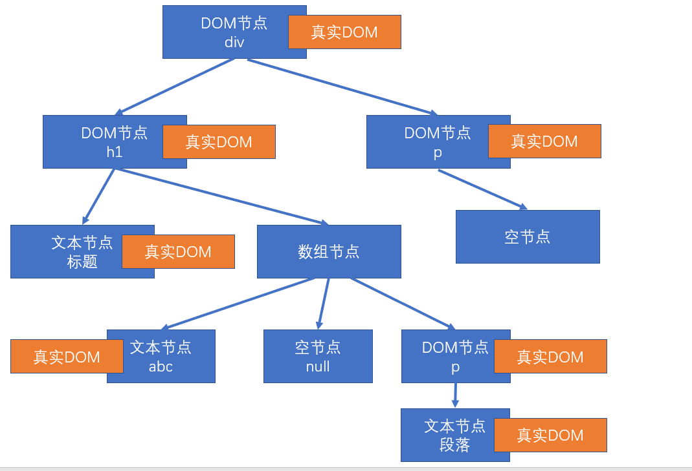

 <!DOCTYPE HTML>
<html lang="zh-CN">
<head><meta name="generator" content="Hexo 3.8.0">
  <meta charset="UTF-8">
  
    <title>JavaScript-React基础知识 | 110laile</title>
    <meta name="viewport" content="width=device-width, initial-scale=1,user-scalable=no">
    
    <meta name="author" content="110laile">
    

    
    <meta name="description" content="React概述 官网：https://react.docschina.org/  什么是React？React是由Facebook研发的、用于解决UI复杂度的开源JavaScript库，目前由React联合社区维护。  它不是框架，只是为了解决UI复杂度而诞生的一个库  React的特点 轻量：React的开发版所有源码（包含注释）仅3000多行 原生：所有的React的代码都是用原生JS书写而成">
<meta name="keywords" content="React">
<meta property="og:type" content="article">
<meta property="og:title" content="JavaScript-React基础知识">
<meta property="og:url" content="http://yoursite.com/2020/03/31/JavaScript-React基础知识/index.html">
<meta property="og:site_name" content="110laile">
<meta property="og:description" content="React概述 官网：https://react.docschina.org/  什么是React？React是由Facebook研发的、用于解决UI复杂度的开源JavaScript库，目前由React联合社区维护。  它不是框架，只是为了解决UI复杂度而诞生的一个库  React的特点 轻量：React的开发版所有源码（包含注释）仅3000多行 原生：所有的React的代码都是用原生JS书写而成">
<meta property="og:locale" content="zh-CN">
<meta property="og:image" content="http://yoursite.com/images/旧版生命周期.png">
<meta property="og:image" content="http://yoursite.com/2020/03/31/JavaScript-React基础知识/新版生命周期%20.jpg">
<meta property="og:image" content="http://yoursite.com/2020/03/31/JavaScript-React基础知识/属性传递.png">
<meta property="og:image" content="http://yoursite.com/2020/03/31/JavaScript-React基础知识/旧版上下文.png">
<meta property="og:image" content="http://yoursite.com/2020/03/31/JavaScript-React基础知识/新版上下文.png">
<meta property="og:image" content="http://yoursite.com/2020/03/31/JavaScript-React基础知识/2019-07-25-13-51-08.png">
<meta property="og:image" content="http://yoursite.com/2020/03/31/JavaScript-React基础知识/2019-07-25-14-17-04.png">
<meta property="og:image" content="http://yoursite.com/2020/03/31/JavaScript-React基础知识/2019-07-25-14-49-53.png">
<meta property="og:image" content="http://yoursite.com/2020/03/31/JavaScript-React基础知识/2019-07-25-14-56-35.png">
<meta property="og:image" content="http://yoursite.com/2020/03/31/JavaScript-React基础知识/hook核心原理.png">
<meta property="og:updated_time" content="2020-08-11T06:54:48.392Z">
<meta name="twitter:card" content="summary">
<meta name="twitter:title" content="JavaScript-React基础知识">
<meta name="twitter:description" content="React概述 官网：https://react.docschina.org/  什么是React？React是由Facebook研发的、用于解决UI复杂度的开源JavaScript库，目前由React联合社区维护。  它不是框架，只是为了解决UI复杂度而诞生的一个库  React的特点 轻量：React的开发版所有源码（包含注释）仅3000多行 原生：所有的React的代码都是用原生JS书写而成">
<meta name="twitter:image" content="http://yoursite.com/images/旧版生命周期.png">

    
    
    <link rel="icon" href="/img/favicon.ico">
    
    
    <link rel="apple-touch-icon" href="/img/jacman.jpg">
    <link rel="apple-touch-icon-precomposed" href="/img/jacman.jpg">
    
    <link rel="stylesheet" href="/css/style.css">
</head>
</html>
  <body>
    <header>
      
<div>
		
			<div id="imglogo">
				<a href="/"></a>
			</div>
			
			<div id="textlogo">
				<h1 class="site-name"><a href="/" title="110laile">110laile</a></h1>
				<h2 class="blog-motto">个人技术博客</h2>
			</div>
			<div class="navbar"><a class="navbutton navmobile" href="#" title="菜单">
			</a></div>
			<nav class="animated">
				<ul>
					<ul>
					 
						<li><a href="/">Home</a></li>
					
						<li><a href="/archives">Archives</a></li>
					
						<li><a href="/about">About</a></li>
					
					<li>
 					
					<form class="search" action="//google.com/search" method="get" accept-charset="utf-8">
						<label>Search</label>
						<input type="search" id="search" name="q" autocomplete="off" maxlength="20" placeholder="搜索">
						<input type="hidden" name="q" value="site:yoursite.com">
					</form>
					
					</li>
				</ul>
			</ul></nav>			
</div>
    </header>
    <div id="container">
      <div id="main" class="post" itemscope itemprop="blogPost">
  
	<article itemprop="articleBody"> 
		<header class="article-info clearfix">
  <h1 itemprop="name">
    
      <a href="/2020/03/31/JavaScript-React基础知识/" title="JavaScript-React基础知识" itemprop="url">JavaScript-React基础知识</a>
  </h1>
  <p class="article-author">By
       
		<a href="/about" title="110laile" target="_blank" itemprop="author">110laile</a>
		
  </p><p class="article-time">
    <time datetime="2020-03-31T13:23:02.000Z" itemprop="datePublished"> 发表于 2020-03-31</time>
    
  </p>
</header>
	<div class="article-content">
		
		<div id="toc" class="toc-article">
			<strong class="toc-title">文章目录</strong>
		
			<ol class="toc"><li class="toc-item toc-level-1"><a class="toc-link" href="#React概述"><span class="toc-number">1.</span> <span class="toc-text">React概述</span></a><ol class="toc-child"><li class="toc-item toc-level-2"><a class="toc-link" href="#什么是React？"><span class="toc-number">1.1.</span> <span class="toc-text">什么是React？</span></a></li><li class="toc-item toc-level-2"><a class="toc-link" href="#React的特点"><span class="toc-number">1.2.</span> <span class="toc-text">React的特点</span></a></li><li class="toc-item toc-level-2"><a class="toc-link" href="#对比Vue"><span class="toc-number">1.3.</span> <span class="toc-text">对比Vue</span></a></li><li class="toc-item toc-level-2"><a class="toc-link" href="#学习路径"><span class="toc-number">1.4.</span> <span class="toc-text">学习路径</span></a></li><li class="toc-item toc-level-2"><a class="toc-link" href="#关于课程"><span class="toc-number">1.5.</span> <span class="toc-text">关于课程</span></a></li></ol></li><li class="toc-item toc-level-1"><a class="toc-link" href="#HelloWorld"><span class="toc-number">2.</span> <span class="toc-text">HelloWorld</span></a><ol class="toc-child"><li class="toc-item toc-level-2"><a class="toc-link" href="#React-createElement"><span class="toc-number">2.1.</span> <span class="toc-text">React.createElement</span></a></li><li class="toc-item toc-level-2"><a class="toc-link" href="#JSX"><span class="toc-number">2.2.</span> <span class="toc-text">JSX</span></a></li></ol></li><li class="toc-item toc-level-1"><a class="toc-link" href="#使用脚手架搭建工程"><span class="toc-number">3.</span> <span class="toc-text">使用脚手架搭建工程</span></a></li><li class="toc-item toc-level-1"><a class="toc-link" href="#开发环境搭建"><span class="toc-number">4.</span> <span class="toc-text">开发环境搭建</span></a><ol class="toc-child"><li class="toc-item toc-level-2"><a class="toc-link" href="#VSCode配置"><span class="toc-number">4.1.</span> <span class="toc-text">VSCode配置</span></a></li><li class="toc-item toc-level-2"><a class="toc-link" href="#VSCode插件安装"><span class="toc-number">4.2.</span> <span class="toc-text">VSCode插件安装</span></a></li><li class="toc-item toc-level-2"><a class="toc-link" href="#Chrome插件安装"><span class="toc-number">4.3.</span> <span class="toc-text">Chrome插件安装</span></a></li></ol></li><li class="toc-item toc-level-1"><a class="toc-link" href="#JSX-1"><span class="toc-number">5.</span> <span class="toc-text">JSX</span></a><ol class="toc-child"><li class="toc-item toc-level-2"><a class="toc-link" href="#什么是JSX"><span class="toc-number">5.1.</span> <span class="toc-text">什么是JSX</span></a></li><li class="toc-item toc-level-2"><a class="toc-link" href="#在JSX中嵌入表达式"><span class="toc-number">5.2.</span> <span class="toc-text">在JSX中嵌入表达式</span></a></li><li class="toc-item toc-level-2"><a class="toc-link" href="#元素的不可变性"><span class="toc-number">5.3.</span> <span class="toc-text">元素的不可变性</span></a></li></ol></li><li class="toc-item toc-level-1"><a class="toc-link" href="#组件和组件属性"><span class="toc-number">6.</span> <span class="toc-text">组件和组件属性</span></a><ol class="toc-child"><li class="toc-item toc-level-2"><a class="toc-link" href="#创建一个组件"><span class="toc-number">6.1.</span> <span class="toc-text">创建一个组件</span></a></li><li class="toc-item toc-level-2"><a class="toc-link" href="#组件的属性"><span class="toc-number">6.2.</span> <span class="toc-text">组件的属性</span></a></li></ol></li><li class="toc-item toc-level-1"><a class="toc-link" href="#组件状态"><span class="toc-number">7.</span> <span class="toc-text">组件状态</span></a></li><li class="toc-item toc-level-1"><a class="toc-link" href="#事件"><span class="toc-number">8.</span> <span class="toc-text">事件</span></a></li><li class="toc-item toc-level-1"><a class="toc-link" href="#深入认识setState"><span class="toc-number">9.</span> <span class="toc-text">深入认识setState</span></a></li><li class="toc-item toc-level-1"><a class="toc-link" href="#生命周期"><span class="toc-number">10.</span> <span class="toc-text">生命周期</span></a><ol class="toc-child"><li class="toc-item toc-level-2"><a class="toc-link" href="#旧版生命周期"><span class="toc-number">10.1.</span> <span class="toc-text">旧版生命周期</span></a></li><li class="toc-item toc-level-2"><a class="toc-link" href="#新版生命周期"><span class="toc-number">10.2.</span> <span class="toc-text">新版生命周期</span></a></li></ol></li><li class="toc-item toc-level-1"><a class="toc-link" href="#传递元素内容"><span class="toc-number">11.</span> <span class="toc-text">传递元素内容</span></a></li><li class="toc-item toc-level-1"><a class="toc-link" href="#表单"><span class="toc-number">12.</span> <span class="toc-text">表单</span></a></li><li class="toc-item toc-level-1"><a class="toc-link" href="#属性默认值-和-类型检查"><span class="toc-number">13.</span> <span class="toc-text">属性默认值 和 类型检查</span></a><ol class="toc-child"><li class="toc-item toc-level-2"><a class="toc-link" href="#属性默认值"><span class="toc-number">13.1.</span> <span class="toc-text">属性默认值</span></a></li></ol></li><li class="toc-item toc-level-1"><a class="toc-link" href="#HOC-高阶组件"><span class="toc-number">14.</span> <span class="toc-text">HOC 高阶组件</span></a></li><li class="toc-item toc-level-1"><a class="toc-link" href="#ref"><span class="toc-number">15.</span> <span class="toc-text">ref</span></a></li><li class="toc-item toc-level-1"><a class="toc-link" href="#Ref转发"><span class="toc-number">16.</span> <span class="toc-text">Ref转发</span></a></li><li class="toc-item toc-level-1"><a class="toc-link" href="#Context"><span class="toc-number">17.</span> <span class="toc-text">Context</span></a><ol class="toc-child"><li class="toc-item toc-level-2"><a class="toc-link" href="#旧的API"><span class="toc-number">17.1.</span> <span class="toc-text">旧的API</span></a></li><li class="toc-item toc-level-2"><a class="toc-link" href="#新的API"><span class="toc-number">17.2.</span> <span class="toc-text">新的API</span></a></li></ol></li><li class="toc-item toc-level-1"><a class="toc-link" href="#PureComponent"><span class="toc-number">18.</span> <span class="toc-text">PureComponent</span></a></li><li class="toc-item toc-level-1"><a class="toc-link" href="#render-props"><span class="toc-number">19.</span> <span class="toc-text">render props</span></a></li><li class="toc-item toc-level-1"><a class="toc-link" href="#Portals"><span class="toc-number">20.</span> <span class="toc-text">Portals</span></a></li><li class="toc-item toc-level-1"><a class="toc-link" href="#错误边界"><span class="toc-number">21.</span> <span class="toc-text">错误边界</span></a></li><li class="toc-item toc-level-1"><a class="toc-link" href="#React中的事件"><span class="toc-number">22.</span> <span class="toc-text">React中的事件</span></a></li><li class="toc-item toc-level-1"><a class="toc-link" href="#渲染原理"><span class="toc-number">23.</span> <span class="toc-text">渲染原理</span></a><ol class="toc-child"><li class="toc-item toc-level-2"><a class="toc-link" href="#首次渲染-新节点渲染"><span class="toc-number">23.1.</span> <span class="toc-text">首次渲染(新节点渲染)</span></a></li><li class="toc-item toc-level-2"><a class="toc-link" href="#更新节点"><span class="toc-number">23.2.</span> <span class="toc-text">更新节点</span></a><ol class="toc-child"><li class="toc-item toc-level-3"><a class="toc-link" href="#对比更新"><span class="toc-number">23.2.1.</span> <span class="toc-text">对比更新</span></a><ol class="toc-child"><li class="toc-item toc-level-4"><a class="toc-link" href="#找到了对比的目标"><span class="toc-number">23.2.1.1.</span> <span class="toc-text">找到了对比的目标</span></a></li><li class="toc-item toc-level-4"><a class="toc-link" href="#没有找到对比的目标"><span class="toc-number">23.2.1.2.</span> <span class="toc-text">没有找到对比的目标</span></a></li></ol></li></ol></li></ol></li><li class="toc-item toc-level-1"><a class="toc-link" href="#工具"><span class="toc-number">24.</span> <span class="toc-text">工具</span></a><ol class="toc-child"><li class="toc-item toc-level-2"><a class="toc-link" href="#严格模式"><span class="toc-number">24.1.</span> <span class="toc-text">严格模式</span></a></li><li class="toc-item toc-level-2"><a class="toc-link" href="#Profiler"><span class="toc-number">24.2.</span> <span class="toc-text">Profiler</span></a></li></ol></li><li class="toc-item toc-level-1"><a class="toc-link" href="#HOOK简介"><span class="toc-number">25.</span> <span class="toc-text">HOOK简介</span></a><ol class="toc-child"><li class="toc-item toc-level-2"><a class="toc-link" href="#State-Hook"><span class="toc-number">25.1.</span> <span class="toc-text">State Hook</span></a></li><li class="toc-item toc-level-2"><a class="toc-link" href="#Effect-Hook"><span class="toc-number">25.2.</span> <span class="toc-text">Effect Hook</span></a></li></ol></li></ol>
		
		</div>
		
		<h1 id="React概述"><a href="#React概述" class="headerlink" title="React概述"></a>React概述</h1><blockquote>
<p>官网：<a href="https://react.docschina.org/" target="_blank" rel="noopener">https://react.docschina.org/</a></p>
</blockquote>
<h2 id="什么是React？"><a href="#什么是React？" class="headerlink" title="什么是React？"></a>什么是React？</h2><p>React是由<strong>Facebook</strong>研发的、用于<strong>解决UI复杂度</strong>的开源<strong>JavaScript库</strong>，目前由React联合社区维护。</p>
<blockquote>
<p>它不是框架，只是为了解决UI复杂度而诞生的一个库</p>
</blockquote>
<h2 id="React的特点"><a href="#React的特点" class="headerlink" title="React的特点"></a>React的特点</h2><ul>
<li>轻量：React的开发版所有源码（包含注释）仅3000多行</li>
<li>原生：所有的React的代码都是用原生JS书写而成的，不依赖其他任何库</li>
<li>易扩展：React对代码的封装程度较低，也没有过多的使用魔法，所以React中的很多功能都可以扩展。</li>
<li>不依赖宿主环境：React只依赖原生JS语言，不依赖任何其他东西，包括运行环境。因此，它可以被轻松的移植到浏览器、桌面应用、移动端。</li>
<li>渐近式：React并非框架，对整个工程没有强制约束力。这对与那些已存在的工程，可以逐步的将其改造为React，而不需要全盘重写。</li>
<li>单向数据流：所有的数据自顶而下的流动</li>
<li>用JS代码声明界面</li>
<li>组件化</li>
</ul>
<h2 id="对比Vue"><a href="#对比Vue" class="headerlink" title="对比Vue"></a>对比Vue</h2><table>
<thead>
<tr>
<th style="text-align:center">对比项</th>
<th style="text-align:center">Vue</th>
<th style="text-align:center">React</th>
</tr>
</thead>
<tbody>
<tr>
<td style="text-align:center">全球使用量</td>
<td style="text-align:center"></td>
<td style="text-align:center">✔</td>
</tr>
<tr>
<td style="text-align:center">国内使用量</td>
<td style="text-align:center">✔</td>
<td style="text-align:center"></td>
</tr>
<tr>
<td style="text-align:center">性能</td>
<td style="text-align:center">✔</td>
<td style="text-align:center">✔</td>
</tr>
<tr>
<td style="text-align:center">易上手</td>
<td style="text-align:center">✔</td>
<td style="text-align:center"></td>
</tr>
<tr>
<td style="text-align:center">灵活度</td>
<td style="text-align:center"></td>
<td style="text-align:center">✔</td>
</tr>
<tr>
<td style="text-align:center">大型企业</td>
<td style="text-align:center"></td>
<td style="text-align:center">✔</td>
</tr>
<tr>
<td style="text-align:center">中小型企业</td>
<td style="text-align:center">✔</td>
<td style="text-align:center"></td>
</tr>
<tr>
<td style="text-align:center">生态</td>
<td style="text-align:center"></td>
<td style="text-align:center">✔</td>
</tr>
</tbody>
</table>
<h2 id="学习路径"><a href="#学习路径" class="headerlink" title="学习路径"></a>学习路径</h2><p>整体原则：熟悉API –&gt; 深入理解原理</p>
<ol>
<li>React<ol>
<li>基础：掌握React的基本使用方法，有能力制作各种组件，并理解其基本运作原理</li>
<li>进阶：掌握React中的一些黑科技，提高代码质量</li>
</ol>
</li>
<li>React-Router：相当于vue-router</li>
<li>Redux：相当于Vuex<ol>
<li>Redux本身</li>
<li>各种中间件</li>
</ol>
</li>
<li>第三方脚手架：umi</li>
<li>UI库：Ant Design，相当于Vue的Element-UI 或 IView</li>
<li>源码部分<ol>
<li>React源码分析</li>
<li>Redux源码分析</li>
</ol>
</li>
</ol>
<h2 id="关于课程"><a href="#关于课程" class="headerlink" title="关于课程"></a>关于课程</h2><ul>
<li>demo关键字：课程名称前有<strong>demo</strong>字样的，为一个小练习，需要同学听完讲解后自行独立完成</li>
<li>扩展关键字：课程名称前有<strong>扩展</strong>字样的，为选修内容，没有掌握不会影响后面的学习</li>
<li>关于源代码：本门课所有源代码均使用git管理，每节课的代码为独立分支，但某些文件夹和文件不属于源代码管理范畴。</li>
<li>关于npm：本门课所有的第三方库安装，均使用yarn</li>
</ul>
<h1 id="HelloWorld"><a href="#HelloWorld" class="headerlink" title="HelloWorld"></a>HelloWorld</h1><p>直接在页面上使用React,引用下面的JS</p>
<figure class="highlight html"><table><tr><td class="gutter"><pre><span class="line">1</span><br><span class="line">2</span><br><span class="line">3</span><br><span class="line">4</span><br><span class="line">5</span><br><span class="line">6</span><br></pre></td><td class="code"><pre><span class="line"><span class="comment">&lt;!-- React的核心库，与宿主环境无关 --&gt;</span></span><br><span class="line"><span class="tag">&lt;<span class="name">script</span> <span class="attr">crossorigin</span> <span class="attr">src</span>=<span class="string">"https://unpkg.com/react@16/umd/react.development.js"</span>&gt;</span><span class="undefined"></span><span class="tag">&lt;/<span class="name">script</span>&gt;</span></span><br><span class="line"><span class="comment">&lt;!-- 依赖核心库，将核心的功能与页面结合 --&gt;</span></span><br><span class="line"><span class="tag">&lt;<span class="name">script</span> <span class="attr">crossorigin</span> <span class="attr">src</span>=<span class="string">"https://unpkg.com/react-dom@16/umd/react-dom.development.js"</span>&gt;</span><span class="undefined"></span><span class="tag">&lt;/<span class="name">script</span>&gt;</span></span><br><span class="line"><span class="comment">&lt;!-- 编译JSX --&gt;</span></span><br><span class="line"><span class="tag">&lt;<span class="name">script</span> <span class="attr">src</span>=<span class="string">"https://unpkg.com/babel-standalone@6/babel.min.js"</span>&gt;</span><span class="undefined"></span><span class="tag">&lt;/<span class="name">script</span>&gt;</span></span><br></pre></td></tr></table></figure>
<h2 id="React-createElement"><a href="#React-createElement" class="headerlink" title="React.createElement"></a>React.createElement</h2><p>创建一个React元素，称作虚拟DOM，本质上是一个对象</p>
<ol>
<li>参数1：元素类型，如果是字符串，一个普通的HTML元素</li>
<li>参数2：元素的属性，一个对象</li>
<li>后续参数：元素的子节点</li>
</ol>
<figure class="highlight js"><table><tr><td class="gutter"><pre><span class="line">1</span><br><span class="line">2</span><br><span class="line">3</span><br><span class="line">4</span><br><span class="line">5</span><br></pre></td><td class="code"><pre><span class="line">&lt;script&gt;</span><br><span class="line">   <span class="keyword">var</span> span = React.createElement(<span class="string">'span'</span>, &#123;&#125;, <span class="string">'一个span元素'</span>);</span><br><span class="line">   <span class="keyword">var</span> h1 = React.createElement(<span class="string">'h1'</span>, &#123; <span class="attr">title</span>: <span class="string">'第一个React元素'</span> &#125;, <span class="string">'hello'</span>, <span class="string">'world'</span>, span);</span><br><span class="line">   ReactDOM.render(h1, <span class="built_in">document</span>.getElementById(<span class="string">'root'</span>));</span><br><span class="line">&lt;<span class="regexp">/script&gt;</span></span><br></pre></td></tr></table></figure>
<h2 id="JSX"><a href="#JSX" class="headerlink" title="JSX"></a>JSX</h2><p>JS的扩展语法，需要使用babel进行转义。在浏览器中使用需要标准type让浏览器不要解析<br><figure class="highlight js"><table><tr><td class="gutter"><pre><span class="line">1</span><br><span class="line">2</span><br><span class="line">3</span><br><span class="line">4</span><br><span class="line">5</span><br><span class="line">6</span><br></pre></td><td class="code"><pre><span class="line">&lt;script type=<span class="string">"text/babel"</span>&gt;</span><br><span class="line"></span><br><span class="line">   <span class="keyword">var</span> span = <span class="xml"><span class="tag">&lt;<span class="name">span</span>&gt;</span>一个元素<span class="tag">&lt;/<span class="name">span</span>&gt;</span></span></span><br><span class="line">   <span class="keyword">var</span> h1 = <span class="xml"><span class="tag">&lt;<span class="name">h1</span> <span class="attr">title</span>=<span class="string">'第一个React元素'</span>&gt;</span>Hello world <span class="tag">&lt;/<span class="name">h1</span>&gt;</span></span></span><br><span class="line">   ReactDOM.render(h1, <span class="built_in">document</span>.getElementById(<span class="string">'root'</span>))</span><br><span class="line">&lt;<span class="regexp">/script&gt;</span></span><br></pre></td></tr></table></figure></p>
<h1 id="使用脚手架搭建工程"><a href="#使用脚手架搭建工程" class="headerlink" title="使用脚手架搭建工程"></a>使用脚手架搭建工程</h1><p>官方：create-react-app<br>第三方：next.js、umijs</p>
<p>凡是使用JSX的文件，必须导入React</p>
<p>我们使用官方脚手架搭建工程,搭建完成之后如下目录<br>├── public<br>├── ├── favicon.ico<br>├── ├── index.html<br>├── src<br>├── ├── index.js</p>
<p>上面的目录是经过精简的,删掉多余的文件,修改index.html,删除多余内容</p>
<p><code>index.js</code><br><figure class="highlight js"><table><tr><td class="gutter"><pre><span class="line">1</span><br><span class="line">2</span><br><span class="line">3</span><br><span class="line">4</span><br></pre></td><td class="code"><pre><span class="line">ReactDOM.render(</span><br><span class="line">  &lt;h1&gt;hello world  &lt;span&gt;span元素&lt;<span class="regexp">/span&gt;&lt;/</span>h1&gt;</span><br><span class="line">  ,<span class="built_in">document</span>.getElementById(<span class="string">'root'</span>)</span><br><span class="line">);</span><br></pre></td></tr></table></figure></p>
<h1 id="开发环境搭建"><a href="#开发环境搭建" class="headerlink" title="开发环境搭建"></a>开发环境搭建</h1><h2 id="VSCode配置"><a href="#VSCode配置" class="headerlink" title="VSCode配置"></a>VSCode配置</h2><p>emmet配置：</p>
<figure class="highlight"><table><tr><td class="gutter"><pre><span class="line">1</span><br><span class="line">2</span><br><span class="line">3</span><br></pre></td><td class="code"><pre><span class="line">"emmet.includeLanguages": &#123;</span><br><span class="line">   "javascript":"javascriptreact"</span><br><span class="line">&#125;</span><br></pre></td></tr></table></figure>
<h2 id="VSCode插件安装"><a href="#VSCode插件安装" class="headerlink" title="VSCode插件安装"></a>VSCode插件安装</h2><ul>
<li>ESLint：代码风格检查</li>
<li>ES7 React/Redux/GraphQL/React-Native snippets：快速代码编写</li>
</ul>
<h2 id="Chrome插件安装"><a href="#Chrome插件安装" class="headerlink" title="Chrome插件安装"></a>Chrome插件安装</h2><p>React Developer Tools</p>
<h1 id="JSX-1"><a href="#JSX-1" class="headerlink" title="JSX"></a>JSX</h1><h2 id="什么是JSX"><a href="#什么是JSX" class="headerlink" title="什么是JSX"></a>什么是JSX</h2><ul>
<li>Facebook起草的JS扩展语法</li>
<li>本质是一个JS对象，会被babel编译，最终会被转换为React.createElement</li>
<li><p>每个JSX表达式，有且仅有一个根节点</p>
<ul>
<li>React.Fragment<figure class="highlight js"><table><tr><td class="gutter"><pre><span class="line">1</span><br><span class="line">2</span><br><span class="line">3</span><br><span class="line">4</span><br><span class="line">5</span><br><span class="line">6</span><br></pre></td><td class="code"><pre><span class="line"><span class="comment">//代表一个空的根节点,可以简写未&lt;&gt;&lt;/&gt;</span></span><br><span class="line"><span class="keyword">const</span> h1 = (</span><br><span class="line"> &lt;React.Fragment&gt;</span><br><span class="line"> &lt;h1&gt;Hello world &lt;span&gt;span1元素&lt;<span class="regexp">/span&gt;&lt;/</span>h1&gt;</span><br><span class="line"> &lt;<span class="regexp">/React.Fragment&gt;</span></span><br><span class="line"><span class="regexp"> )</span></span><br></pre></td></tr></table></figure>
</li>
</ul>
</li>
<li><p>每个JSX元素必须结束（XML规范）</p>
</li>
</ul>
<h2 id="在JSX中嵌入表达式"><a href="#在JSX中嵌入表达式" class="headerlink" title="在JSX中嵌入表达式"></a>在JSX中嵌入表达式</h2><ul>
<li>在JSX中使用注释</li>
<li><p>将表达式作为内容的一部分</p>
<ul>
<li>null、undefined、false不会显示</li>
<li>普通对象，不可以作为子元素</li>
<li>可以放置React元素对象<figure class="highlight js"><table><tr><td class="gutter"><pre><span class="line">1</span><br><span class="line">2</span><br><span class="line">3</span><br><span class="line">4</span><br><span class="line">5</span><br><span class="line">6</span><br><span class="line">7</span><br><span class="line">8</span><br><span class="line">9</span><br><span class="line">10</span><br><span class="line">11</span><br><span class="line">12</span><br><span class="line">13</span><br><span class="line">14</span><br><span class="line">15</span><br><span class="line">16</span><br><span class="line">17</span><br><span class="line">18</span><br><span class="line">19</span><br><span class="line">20</span><br><span class="line">21</span><br><span class="line">22</span><br><span class="line">23</span><br><span class="line">24</span><br><span class="line">25</span><br><span class="line">26</span><br><span class="line">27</span><br><span class="line">28</span><br><span class="line">29</span><br><span class="line">30</span><br><span class="line">31</span><br><span class="line">32</span><br><span class="line">33</span><br><span class="line">34</span><br><span class="line">35</span><br><span class="line">36</span><br><span class="line">37</span><br><span class="line">38</span><br><span class="line">39</span><br><span class="line">40</span><br></pre></td><td class="code"><pre><span class="line"><span class="comment">// const obj = &#123;</span></span><br><span class="line"><span class="comment">//   a:1,</span></span><br><span class="line"><span class="comment">//   b:2</span></span><br><span class="line"><span class="comment">// &#125;</span></span><br><span class="line"><span class="keyword">const</span> obj = <span class="xml"><span class="tag">&lt;<span class="name">span</span>&gt;</span>这是一个span元素<span class="tag">&lt;/<span class="name">span</span>&gt;</span></span></span><br><span class="line"><span class="keyword">const</span> a =<span class="number">123</span>,b =<span class="number">432</span>;</span><br><span class="line"><span class="keyword">const</span> arr = [<span class="number">2</span>,<span class="literal">null</span>,<span class="literal">false</span>,<span class="literal">undefined</span>,<span class="number">3</span>]</span><br><span class="line"></span><br><span class="line"><span class="keyword">const</span> numbers=<span class="keyword">new</span> <span class="built_in">Array</span>(<span class="number">30</span>);</span><br><span class="line">numbers.fill(<span class="number">0</span>);</span><br><span class="line"><span class="keyword">var</span> lis = numbers.map(<span class="function">(<span class="params">item,i</span>)=&gt;</span>(<span class="xml"><span class="tag">&lt;<span class="name">li</span> <span class="attr">key</span>=<span class="string">&#123;i&#125;</span>&gt;</span>&#123;i&#125;<span class="tag">&lt;/<span class="name">li</span>&gt;</span></span>))</span><br><span class="line"></span><br><span class="line"><span class="keyword">const</span> div = (</span><br><span class="line">&lt;div&gt;</span><br><span class="line">   &#123;a&#125;*&#123;b&#125;=&#123;a*b&#125;</span><br><span class="line">   &lt;p&gt;</span><br><span class="line">      &#123;<span class="comment">/* 以下不会产生任何输出 */</span>&#125;</span><br><span class="line">      &#123;<span class="literal">null</span>&#125;</span><br><span class="line">      &#123;<span class="literal">undefined</span>&#125;</span><br><span class="line">      &#123;<span class="literal">false</span>&#125;</span><br><span class="line">   &lt;<span class="regexp">/p&gt;</span></span><br><span class="line"><span class="regexp">   &lt;p&gt;</span></span><br><span class="line"><span class="regexp">      &#123;/</span>*普通对象无法放置,React元素对象没问题*<span class="regexp">/&#125;</span></span><br><span class="line"><span class="regexp">      &#123;obj&#125;</span></span><br><span class="line"><span class="regexp">   &lt;/</span>p&gt;</span><br><span class="line">   &lt;p&gt;</span><br><span class="line">      &#123;arr&#125;</span><br><span class="line">   &lt;<span class="regexp">/p&gt;</span></span><br><span class="line"><span class="regexp">   &lt;p&gt;</span></span><br><span class="line"><span class="regexp">      &#123;numbers&#125;</span></span><br><span class="line"><span class="regexp">   &lt;/</span>p&gt;</span><br><span class="line">   &lt;p&gt;</span><br><span class="line">      &#123;lis&#125;</span><br><span class="line">   &lt;<span class="regexp">/p&gt;</span></span><br><span class="line"><span class="regexp">&lt;/</span>div&gt;</span><br><span class="line">)</span><br><span class="line"></span><br><span class="line">ReactDOM.render(div,</span><br><span class="line"><span class="built_in">document</span>.getElementById(<span class="string">'root'</span>)</span><br><span class="line">);</span><br></pre></td></tr></table></figure>
</li>
</ul>
</li>
<li><p>将表达式作为元素属性</p>
</li>
<li><p>属性使用小驼峰命名法</p>
<figure class="highlight js"><table><tr><td class="gutter"><pre><span class="line">1</span><br><span class="line">2</span><br><span class="line">3</span><br><span class="line">4</span><br><span class="line">5</span><br><span class="line">6</span><br><span class="line">7</span><br><span class="line">8</span><br><span class="line">9</span><br><span class="line">10</span><br><span class="line">11</span><br></pre></td><td class="code"><pre><span class="line"><span class="keyword">const</span> url = <span class="string">"https://ss1.bdstatic.com/70cFvXSh_Q1YnxGkpoWK1HF6hhy/it/u=2962719555,3613138778&amp;fm=27&amp;gp=0.jpg"</span>;</span><br><span class="line"><span class="keyword">const</span> cls = <span class="string">"image"</span>;</span><br><span class="line"><span class="keyword">const</span> div = (</span><br><span class="line">  &lt;div&gt;</span><br><span class="line">    &lt;img src=&#123;url&#125; className=&#123;cls&#125; style=&#123;&#123;<span class="attr">marginLeft</span>:<span class="string">'50px'</span>,<span class="attr">width</span>:<span class="string">'200px'</span>&#125;&#125; alt=<span class="string">""</span>/&gt;</span><br><span class="line">  &lt;<span class="regexp">/div&gt;</span></span><br><span class="line"><span class="regexp">)</span></span><br><span class="line"><span class="regexp"></span></span><br><span class="line"><span class="regexp">ReactDOM.render(div,</span></span><br><span class="line"><span class="regexp">  document.getElementById('root')</span></span><br><span class="line"><span class="regexp">);</span></span><br></pre></td></tr></table></figure>
</li>
<li><p>防止注入攻击</p>
<ul>
<li>自动编码</li>
<li>dangerouslySetInnerHTML<figure class="highlight js"><table><tr><td class="gutter"><pre><span class="line">1</span><br><span class="line">2</span><br><span class="line">3</span><br><span class="line">4</span><br><span class="line">5</span><br><span class="line">6</span><br><span class="line">7</span><br><span class="line">8</span><br><span class="line">9</span><br><span class="line">10</span><br><span class="line">11</span><br><span class="line">12</span><br></pre></td><td class="code"><pre><span class="line"><span class="keyword">const</span> content = <span class="string">"&lt;h1&gt;afasfasfd&lt;/h1&gt;&lt;p&gt;阿斯顿法定发送&lt;/p&gt;"</span>;</span><br><span class="line"></span><br><span class="line"><span class="keyword">const</span> div = (</span><br><span class="line">  &lt;div dangerouslySetInnerHTML=&#123;&#123;</span><br><span class="line">    __html:content</span><br><span class="line">  &#125;&#125;&gt;</span><br><span class="line">  &lt;<span class="regexp">/div&gt;</span></span><br><span class="line"><span class="regexp">)</span></span><br><span class="line"><span class="regexp"></span></span><br><span class="line"><span class="regexp">ReactDOM.render(div,</span></span><br><span class="line"><span class="regexp">  document.getElementById('root')</span></span><br><span class="line"><span class="regexp">);</span></span><br></pre></td></tr></table></figure>
</li>
</ul>
</li>
</ul>
<h2 id="元素的不可变性"><a href="#元素的不可变性" class="headerlink" title="元素的不可变性"></a>元素的不可变性</h2><ul>
<li>虽然JSX元素是一个对象，但是该对象中的所有属性不可更改</li>
<li>如果确实需要更改元素的属性，需要重新创建JSX元素</li>
</ul>
<figure class="highlight js"><table><tr><td class="gutter"><pre><span class="line">1</span><br><span class="line">2</span><br><span class="line">3</span><br><span class="line">4</span><br><span class="line">5</span><br><span class="line">6</span><br><span class="line">7</span><br><span class="line">8</span><br><span class="line">9</span><br><span class="line">10</span><br><span class="line">11</span><br><span class="line">12</span><br><span class="line">13</span><br></pre></td><td class="code"><pre><span class="line"><span class="keyword">let</span> num = <span class="number">0</span>;</span><br><span class="line"> </span><br><span class="line">setInterval(<span class="function"><span class="params">()</span> =&gt;</span> &#123;</span><br><span class="line">    num++;</span><br><span class="line">    <span class="keyword">const</span> div = (</span><br><span class="line">      &lt;div title=<span class="string">"asdfadf"</span>&gt;</span><br><span class="line">          &#123;num&#125;</span><br><span class="line">      &lt;<span class="regexp">/div&gt;</span></span><br><span class="line"><span class="regexp">    );</span></span><br><span class="line"><span class="regexp">    ReactDOM.render(div,</span></span><br><span class="line"><span class="regexp">      document.getElementById('root')</span></span><br><span class="line"><span class="regexp">    );</span></span><br><span class="line"><span class="regexp">&#125;, 1000);</span></span><br></pre></td></tr></table></figure>
<h1 id="组件和组件属性"><a href="#组件和组件属性" class="headerlink" title="组件和组件属性"></a>组件和组件属性</h1><p>组件：包含内容、样式和功能的UI单元</p>
<h2 id="创建一个组件"><a href="#创建一个组件" class="headerlink" title="创建一个组件"></a>创建一个组件</h2><p><strong>特别注意：组件的名称首字母必须大写</strong></p>
<ol>
<li>函数组件</li>
</ol>
<p>返回一个React元素</p>
<figure class="highlight js"><table><tr><td class="gutter"><pre><span class="line">1</span><br><span class="line">2</span><br><span class="line">3</span><br><span class="line">4</span><br></pre></td><td class="code"><pre><span class="line"><span class="keyword">import</span> React <span class="keyword">from</span> <span class="string">'react'</span></span><br><span class="line"><span class="keyword">export</span> <span class="keyword">default</span> <span class="function"><span class="keyword">function</span> <span class="title">MyFuncComp</span>(<span class="params">props</span>)</span>&#123;</span><br><span class="line">    <span class="keyword">return</span> <span class="xml"><span class="tag">&lt;<span class="name">h1</span>&gt;</span>函数组件,目前的数字:&#123;props.number&#125;<span class="tag">&lt;/<span class="name">h1</span>&gt;</span></span></span><br><span class="line">&#125;</span><br></pre></td></tr></table></figure>
<ol start="2">
<li>类组件</li>
</ol>
<p>必须继承React.Component</p>
<p>必须提供render函数，用于渲染组件</p>
<figure class="highlight js"><table><tr><td class="gutter"><pre><span class="line">1</span><br><span class="line">2</span><br><span class="line">3</span><br><span class="line">4</span><br><span class="line">5</span><br><span class="line">6</span><br><span class="line">7</span><br><span class="line">8</span><br><span class="line">9</span><br><span class="line">10</span><br><span class="line">11</span><br><span class="line">12</span><br><span class="line">13</span><br><span class="line">14</span><br><span class="line">15</span><br><span class="line">16</span><br><span class="line">17</span><br><span class="line">18</span><br><span class="line">19</span><br><span class="line">20</span><br><span class="line">21</span><br><span class="line">22</span><br><span class="line">23</span><br><span class="line">24</span><br><span class="line">25</span><br></pre></td><td class="code"><pre><span class="line"><span class="keyword">import</span> React <span class="keyword">from</span> <span class="string">'react'</span></span><br><span class="line"></span><br><span class="line"></span><br><span class="line"><span class="keyword">export</span> <span class="keyword">default</span> <span class="class"><span class="keyword">class</span> <span class="title">MyClassComp</span> <span class="keyword">extends</span> <span class="title">React</span>.<span class="title">Component</span> </span>&#123;</span><br><span class="line">    <span class="comment">// constructor(props) &#123;</span></span><br><span class="line">    <span class="comment">//     super(props);</span></span><br><span class="line">    <span class="comment">//     console.log(props, this.props, props === this.props);</span></span><br><span class="line">    <span class="comment">// &#125;</span></span><br><span class="line">    render() &#123;</span><br><span class="line">        <span class="keyword">if</span>(<span class="keyword">this</span>.props.obj)&#123;</span><br><span class="line">            <span class="keyword">return</span> <span class="xml"><span class="tag">&lt;&gt;</span></span></span><br><span class="line"><span class="xml">                <span class="tag">&lt;<span class="name">p</span>&gt;</span>姓名:&#123;this.props.obj.name&#125;<span class="tag">&lt;/<span class="name">p</span>&gt;</span></span></span><br><span class="line"><span class="xml">                <span class="tag">&lt;<span class="name">p</span>&gt;</span>年龄:&#123;this.props.obj.age&#125;<span class="tag">&lt;/<span class="name">p</span>&gt;</span></span></span><br><span class="line"><span class="xml">            <span class="tag">&lt;/&gt;</span></span></span><br><span class="line"><span class="xml">        &#125;else if(this.props.ui)&#123;</span></span><br><span class="line"><span class="xml">            return <span class="tag">&lt;&gt;</span></span></span><br><span class="line">                &lt;div&gt;</span><br><span class="line">                    &lt;h1&gt;下面是传入的内容&lt;/h1&gt;</span><br><span class="line">                    &#123;this.props.ui&#125;</span><br><span class="line"><span class="xml">                <span class="tag">&lt;/<span class="name">div</span>&gt;</span></span></span><br><span class="line"><span class="xml">            <span class="tag">&lt;/&gt;</span></span></span><br><span class="line"><span class="xml">        &#125;</span></span><br><span class="line"><span class="xml">    return <span class="tag">&lt;<span class="name">h1</span>&gt;</span>类组件的内容,数字:&#123;this.props.number&#125;<span class="tag">&lt;/<span class="name">h1</span>&gt;</span></span></span><br><span class="line"><span class="xml">    &#125;</span></span><br><span class="line"><span class="xml">&#125;</span></span><br></pre></td></tr></table></figure>
<h2 id="组件的属性"><a href="#组件的属性" class="headerlink" title="组件的属性"></a>组件的属性</h2><ol>
<li>对于函数组件，属性会作为一个对象的属性，传递给函数的参数</li>
<li>对于类组件，属性会作为一个对象的属性，传递给构造函数的参数</li>
</ol>
<p>注意：组件的属性，应该使用小驼峰命名法</p>
<p><strong>组件无法改变自身的属性</strong>。</p>
<p>之前学习的React元素，本质上，就是一个组件（内置组件）</p>
<figure class="highlight js"><table><tr><td class="gutter"><pre><span class="line">1</span><br><span class="line">2</span><br><span class="line">3</span><br><span class="line">4</span><br><span class="line">5</span><br><span class="line">6</span><br><span class="line">7</span><br><span class="line">8</span><br><span class="line">9</span><br><span class="line">10</span><br></pre></td><td class="code"><pre><span class="line"></span><br><span class="line"><span class="keyword">import</span> MyFuncComp <span class="keyword">from</span> <span class="string">'./MyFuncComp'</span></span><br><span class="line"><span class="keyword">import</span> MyClassComp <span class="keyword">from</span> <span class="string">'./MyClassComp'</span></span><br><span class="line"></span><br><span class="line"><span class="keyword">const</span> comp = <span class="xml"><span class="tag">&lt;<span class="name">MyFuncComp</span> <span class="attr">number</span>=<span class="string">&#123;3&#125;</span>&gt;</span><span class="tag">&lt;/<span class="name">MyFuncComp</span>&gt;</span></span></span><br><span class="line"></span><br><span class="line"><span class="built_in">console</span>.log(comp);</span><br><span class="line"></span><br><span class="line"><span class="keyword">const</span> div =<span class="xml"><span class="tag">&lt;<span class="name">div</span> <span class="attr">title</span>=<span class="string">"ASDA"</span>&gt;</span><span class="tag">&lt;/<span class="name">div</span>&gt;</span></span></span><br><span class="line">/<span class="built_in">console</span>.log(div);</span><br></pre></td></tr></table></figure>
<p>React中的哲学：数据属于谁，谁才有权力改动</p>
<p><strong>React中的数据，自顶而下流动</strong></p>
<h1 id="组件状态"><a href="#组件状态" class="headerlink" title="组件状态"></a>组件状态</h1><p>组件状态：组件可以自行维护的数据</p>
<p>组件状态仅在类组件中有效</p>
<p>状态（state），本质上是类组件的一个属性，是一个对象</p>
<p><strong>状态初始化</strong></p>
<p><strong>状态的变化</strong></p>
<p>不能直接改变状态：因为React无法监控到状态发生了变化</p>
<p>必须使用this.setState({})改变状态</p>
<p>一旦调用了this.setState，会导致当前组件重新渲染<br><figure class="highlight js"><table><tr><td class="gutter"><pre><span class="line">1</span><br><span class="line">2</span><br><span class="line">3</span><br><span class="line">4</span><br><span class="line">5</span><br><span class="line">6</span><br><span class="line">7</span><br><span class="line">8</span><br><span class="line">9</span><br><span class="line">10</span><br><span class="line">11</span><br><span class="line">12</span><br><span class="line">13</span><br><span class="line">14</span><br><span class="line">15</span><br><span class="line">16</span><br><span class="line">17</span><br><span class="line">18</span><br><span class="line">19</span><br><span class="line">20</span><br><span class="line">21</span><br><span class="line">22</span><br><span class="line">23</span><br><span class="line">24</span><br><span class="line">25</span><br><span class="line">26</span><br></pre></td><td class="code"><pre><span class="line"><span class="keyword">export</span> <span class="keyword">default</span> <span class="class"><span class="keyword">class</span> <span class="title">Tick</span> <span class="keyword">extends</span> <span class="title">Component</span> </span>&#123;</span><br><span class="line">    <span class="comment">//初始化状态,JS Next语法 目前处于实验阶段  //初始化可以写在构造函数中</span></span><br><span class="line">    state=&#123;</span><br><span class="line">        left:<span class="keyword">this</span>.props.number,</span><br><span class="line">        n:<span class="number">123</span></span><br><span class="line">    &#125;</span><br><span class="line">    <span class="keyword">constructor</span>(props)&#123;</span><br><span class="line">        <span class="keyword">super</span>(props);</span><br><span class="line"></span><br><span class="line">        <span class="keyword">this</span>.timer = setInterval(<span class="function"><span class="params">()</span> =&gt;</span> &#123;</span><br><span class="line">            <span class="keyword">this</span>.setState(&#123;</span><br><span class="line">                left:<span class="keyword">this</span>.state.left<span class="number">-1</span></span><br><span class="line">            &#125;);</span><br><span class="line">            <span class="keyword">if</span>(<span class="keyword">this</span>.state.left ===<span class="number">0</span>)&#123;</span><br><span class="line">                clearInterval(<span class="keyword">this</span>.timer);</span><br><span class="line">            &#125;</span><br><span class="line">        &#125;, <span class="number">1000</span>);</span><br><span class="line">    &#125;</span><br><span class="line">    render() &#123;</span><br><span class="line">        <span class="keyword">return</span> (</span><br><span class="line">            &lt;div&gt;</span><br><span class="line">                &lt;h1&gt;倒计时剩余时间:&#123;<span class="keyword">this</span>.state.left&#125;&lt;<span class="regexp">/h1&gt;</span></span><br><span class="line"><span class="regexp">            &lt;/</span>div&gt;</span><br><span class="line">        )</span><br><span class="line">    &#125;</span><br><span class="line">&#125;</span><br></pre></td></tr></table></figure></p>
<p><strong>组件中的数据</strong></p>
<ol>
<li>props：该数据是由组件的使用者传递的数据，所有权不属于组件自身，因此组件无法改变该数组</li>
<li>state：该数组是由组件自身创建的，所有权属于组件自身，因此组件有权改变该数据</li>
</ol>
<h1 id="事件"><a href="#事件" class="headerlink" title="事件"></a>事件</h1><p>在React中，组件的事件，本质上就是一个属性</p>
<p>按照之前React对组件的约定，由于事件本质上是一个属性，因此也需要使用小驼峰命名法</p>
<p><strong>如果没有特殊处理，在事件处理函数中，this指向undefined</strong></p>
<ol>
<li>使用bind函数，绑定this</li>
<li>使用箭头函数</li>
</ol>
<figure class="highlight js"><table><tr><td class="gutter"><pre><span class="line">1</span><br><span class="line">2</span><br><span class="line">3</span><br><span class="line">4</span><br><span class="line">5</span><br><span class="line">6</span><br><span class="line">7</span><br><span class="line">8</span><br><span class="line">9</span><br><span class="line">10</span><br><span class="line">11</span><br><span class="line">12</span><br><span class="line">13</span><br><span class="line">14</span><br><span class="line">15</span><br><span class="line">16</span><br><span class="line">17</span><br><span class="line">18</span><br><span class="line">19</span><br><span class="line">20</span><br><span class="line">21</span><br><span class="line">22</span><br><span class="line">23</span><br><span class="line">24</span><br><span class="line">25</span><br><span class="line">26</span><br><span class="line">27</span><br><span class="line">28</span><br><span class="line">29</span><br><span class="line">30</span><br><span class="line">31</span><br><span class="line">32</span><br><span class="line">33</span><br><span class="line">34</span><br></pre></td><td class="code"><pre><span class="line"><span class="keyword">export</span> <span class="keyword">default</span> <span class="class"><span class="keyword">class</span> <span class="title">TickControl</span> <span class="keyword">extends</span> <span class="title">Component</span> </span>&#123;</span><br><span class="line">    state=&#123;</span><br><span class="line">        isOver:<span class="literal">false</span></span><br><span class="line">    &#125;</span><br><span class="line">    <span class="comment">//constructor(props)&#123;</span></span><br><span class="line">    <span class="comment">//     super(props);</span></span><br><span class="line">    <span class="comment">//     this.handleClick = this.handleClick.bind(this);</span></span><br><span class="line">    <span class="comment">//     this.handleOver = this.handleOver.bind(this);</span></span><br><span class="line">    <span class="comment">// &#125;</span></span><br><span class="line">    handleClick= <span class="function"><span class="params">()</span>=&gt;</span>&#123;</span><br><span class="line">        <span class="built_in">console</span>.log(<span class="keyword">this</span>)</span><br><span class="line">        <span class="built_in">console</span>.log(<span class="string">"点击了"</span>)</span><br><span class="line">    &#125;</span><br><span class="line">    handleOver= <span class="function"><span class="params">()</span>=&gt;</span>&#123;</span><br><span class="line">        <span class="built_in">console</span>.log(<span class="keyword">this</span>);</span><br><span class="line">        <span class="keyword">this</span>.setState(&#123;</span><br><span class="line">            isOver: <span class="literal">true</span></span><br><span class="line">        &#125;)</span><br><span class="line">    &#125;</span><br><span class="line">    render() &#123;</span><br><span class="line">        <span class="keyword">let</span> status=<span class="string">"正在倒计时"</span>;</span><br><span class="line">        <span class="keyword">if</span>(<span class="keyword">this</span>.state.isOver)&#123;</span><br><span class="line">            status=<span class="string">"倒计时完成"</span></span><br><span class="line">        &#125;</span><br><span class="line">        <span class="keyword">return</span> (</span><br><span class="line">            &lt;div&gt;</span><br><span class="line">                &lt;Tick number=&#123;<span class="number">10</span>&#125; onClick=&#123;<span class="keyword">this</span>.handleClick&#125; onOver=&#123;<span class="keyword">this</span>.handleOver&#125;&gt;<span class="xml"><span class="tag">&lt;/<span class="name">Tick</span>&gt;</span></span></span><br><span class="line">                &lt;h2&gt;</span><br><span class="line">                    &#123;status&#125;</span><br><span class="line">                &lt;<span class="regexp">/h2&gt;</span></span><br><span class="line"><span class="regexp">            &lt;/</span>div&gt;</span><br><span class="line">        )</span><br><span class="line">    &#125;</span><br><span class="line">&#125;</span><br></pre></td></tr></table></figure>
<h1 id="深入认识setState"><a href="#深入认识setState" class="headerlink" title="深入认识setState"></a>深入认识setState</h1><p>setState，它对状态的改变，<strong>可能</strong>是异步的</p>
<blockquote>
<p>如果改变状态的代码处于某个HTML元素的事件中，则其是异步的，否则是同步</p>
</blockquote>
<figure class="highlight js"><table><tr><td class="gutter"><pre><span class="line">1</span><br><span class="line">2</span><br><span class="line">3</span><br><span class="line">4</span><br><span class="line">5</span><br><span class="line">6</span><br><span class="line">7</span><br><span class="line">8</span><br><span class="line">9</span><br><span class="line">10</span><br><span class="line">11</span><br><span class="line">12</span><br><span class="line">13</span><br><span class="line">14</span><br><span class="line">15</span><br><span class="line">16</span><br><span class="line">17</span><br><span class="line">18</span><br><span class="line">19</span><br><span class="line">20</span><br><span class="line">21</span><br><span class="line">22</span><br><span class="line">23</span><br><span class="line">24</span><br></pre></td><td class="code"><pre><span class="line"><span class="keyword">export</span> <span class="keyword">default</span> <span class="class"><span class="keyword">class</span> <span class="title">Comp</span> <span class="keyword">extends</span> <span class="title">Component</span> </span>&#123;</span><br><span class="line">    state=&#123;</span><br><span class="line">        n:<span class="number">0</span></span><br><span class="line">    &#125;</span><br><span class="line">    handleClick = <span class="function"><span class="params">()</span>=&gt;</span>&#123;</span><br><span class="line">        <span class="keyword">this</span>.setState(&#123;</span><br><span class="line">            n:<span class="keyword">this</span>.state.n+<span class="number">1</span></span><br><span class="line">        &#125;)</span><br><span class="line">        <span class="built_in">console</span>.log(<span class="keyword">this</span>.state.n);<span class="comment">//还没有重新渲染，说明目前状态仍然没有改变</span></span><br><span class="line">    &#125;</span><br><span class="line">    render() &#123;</span><br><span class="line">        <span class="built_in">console</span>.log(<span class="string">'render'</span>);</span><br><span class="line">        <span class="keyword">return</span> (</span><br><span class="line">            &lt;div&gt;</span><br><span class="line">                    &lt;h1&gt;</span><br><span class="line">                        &#123;<span class="keyword">this</span>.state.n&#125;</span><br><span class="line">                    &lt;<span class="regexp">/h1&gt;</span></span><br><span class="line"><span class="regexp">                    &lt;p&gt;</span></span><br><span class="line"><span class="regexp">                        &lt;button onClick=&#123;this.handleClick&#125;&gt;+&lt;/</span>button&gt;</span><br><span class="line">                    &lt;<span class="regexp">/p&gt;</span></span><br><span class="line"><span class="regexp">            &lt;/</span>div&gt;</span><br><span class="line">        )</span><br><span class="line">    &#125;</span><br><span class="line">&#125;</span><br></pre></td></tr></table></figure>
<p>如果遇到某个事件中，需要同步调用多次，需要使用函数的方式得到最新状态</p>
<p>最佳实践：</p>
<ol>
<li>把所有的setState当作是异步的</li>
<li>永远不要信任setState调用之后的状态</li>
<li><p>如果要使用改变之后的状态，需要使用回调函数（setState的第二个参数）</p>
<figure class="highlight js"><table><tr><td class="gutter"><pre><span class="line">1</span><br><span class="line">2</span><br><span class="line">3</span><br><span class="line">4</span><br><span class="line">5</span><br><span class="line">6</span><br><span class="line">7</span><br><span class="line">8</span><br><span class="line">9</span><br><span class="line">10</span><br><span class="line">11</span><br><span class="line">12</span><br><span class="line">13</span><br><span class="line">14</span><br><span class="line">15</span><br><span class="line">16</span><br><span class="line">17</span><br><span class="line">18</span><br><span class="line">19</span><br><span class="line">20</span><br><span class="line">21</span><br><span class="line">22</span><br><span class="line">23</span><br><span class="line">24</span><br><span class="line">25</span><br><span class="line">26</span><br></pre></td><td class="code"><pre><span class="line"><span class="keyword">export</span> <span class="keyword">default</span> <span class="class"><span class="keyword">class</span> <span class="title">Comp</span> <span class="keyword">extends</span> <span class="title">Component</span> </span>&#123;</span><br><span class="line">    state=&#123;</span><br><span class="line">        n:<span class="number">0</span></span><br><span class="line">    &#125;</span><br><span class="line">    handleClick = <span class="function"><span class="params">()</span>=&gt;</span>&#123;</span><br><span class="line">        <span class="keyword">this</span>.setState(&#123;</span><br><span class="line">            n:<span class="keyword">this</span>.state.n+<span class="number">1</span></span><br><span class="line">        &#125;,()=&gt;&#123;</span><br><span class="line">            <span class="built_in">console</span>.log(<span class="keyword">this</span>.state.n);<span class="comment">//还没有重新渲染，说明目前状态仍然没有改变</span></span><br><span class="line">        &#125;)</span><br><span class="line">        </span><br><span class="line">    &#125;</span><br><span class="line">    render() &#123;</span><br><span class="line">        <span class="built_in">console</span>.log(<span class="string">'render'</span>);</span><br><span class="line">        <span class="keyword">return</span> (</span><br><span class="line">            &lt;div&gt;</span><br><span class="line">                    &lt;h1&gt;</span><br><span class="line">                        &#123;<span class="keyword">this</span>.state.n&#125;</span><br><span class="line">                    &lt;<span class="regexp">/h1&gt;</span></span><br><span class="line"><span class="regexp">                    &lt;p&gt;</span></span><br><span class="line"><span class="regexp">                        &lt;button onClick=&#123;this.handleClick&#125;&gt;+&lt;/</span>button&gt;</span><br><span class="line">                    &lt;<span class="regexp">/p&gt;</span></span><br><span class="line"><span class="regexp">            &lt;/</span>div&gt;</span><br><span class="line">        )</span><br><span class="line">    &#125;</span><br><span class="line">&#125;</span><br></pre></td></tr></table></figure>
</li>
<li><p>如果新的状态要根据之前的状态进行运算，使用函数的方式改变状态（setState的第一个函数）</p>
<figure class="highlight js"><table><tr><td class="gutter"><pre><span class="line">1</span><br><span class="line">2</span><br><span class="line">3</span><br><span class="line">4</span><br><span class="line">5</span><br><span class="line">6</span><br><span class="line">7</span><br><span class="line">8</span><br></pre></td><td class="code"><pre><span class="line"><span class="keyword">this</span>.setState(<span class="function"><span class="params">cur</span>=&gt;</span>&#123;</span><br><span class="line">   <span class="keyword">return</span> &#123;</span><br><span class="line">      n:cur.n+<span class="number">1</span></span><br><span class="line">   &#125;</span><br><span class="line">&#125;,()=&gt;&#123;</span><br><span class="line">   <span class="comment">//所有状态全部更新完成，并且重新渲染后执行</span></span><br><span class="line">   <span class="built_in">console</span>.log(<span class="string">"state更新完成"</span>, <span class="keyword">this</span>.state.n);</span><br><span class="line">&#125;)</span><br></pre></td></tr></table></figure>
</li>
</ol>
<p>React会对异步的setState进行优化，将多次setState进行合并（将多次状态改变完成后，再统一对state进行改变，然后触发render）</p>
<ol>
<li><p>同步调用不会优化</p>
<figure class="highlight js"><table><tr><td class="gutter"><pre><span class="line">1</span><br><span class="line">2</span><br><span class="line">3</span><br><span class="line">4</span><br><span class="line">5</span><br><span class="line">6</span><br><span class="line">7</span><br><span class="line">8</span><br><span class="line">9</span><br><span class="line">10</span><br><span class="line">11</span><br><span class="line">12</span><br><span class="line">13</span><br><span class="line">14</span><br><span class="line">15</span><br><span class="line">16</span><br><span class="line">17</span><br><span class="line">18</span><br><span class="line">19</span><br><span class="line">20</span><br><span class="line">21</span><br><span class="line">22</span><br><span class="line">23</span><br><span class="line">24</span><br><span class="line">25</span><br><span class="line">26</span><br><span class="line">27</span><br><span class="line">28</span><br><span class="line">29</span><br><span class="line">30</span><br><span class="line">31</span><br><span class="line">32</span><br></pre></td><td class="code"><pre><span class="line"><span class="keyword">export</span> <span class="keyword">default</span> <span class="class"><span class="keyword">class</span> <span class="title">Comp</span> <span class="keyword">extends</span> <span class="title">Component</span> </span>&#123;</span><br><span class="line">    state=&#123;</span><br><span class="line">        n:<span class="number">0</span></span><br><span class="line">    &#125;</span><br><span class="line">    <span class="keyword">constructor</span>(props)&#123;</span><br><span class="line">        <span class="keyword">super</span>(props);</span><br><span class="line">        setInterval(<span class="function"><span class="params">()</span> =&gt;</span> &#123;</span><br><span class="line">            <span class="keyword">this</span>.setState(&#123;</span><br><span class="line">                n:<span class="keyword">this</span>.state.n+<span class="number">1</span></span><br><span class="line">            &#125;)</span><br><span class="line">            <span class="keyword">this</span>.setState(&#123;</span><br><span class="line">                n:<span class="keyword">this</span>.state.n+<span class="number">1</span></span><br><span class="line">            &#125;)</span><br><span class="line">            <span class="keyword">this</span>.setState(&#123;</span><br><span class="line">                n:<span class="keyword">this</span>.state.n+<span class="number">1</span></span><br><span class="line">            &#125;)</span><br><span class="line">        &#125;, <span class="number">1000</span>);</span><br><span class="line">    &#125;</span><br><span class="line">    render() &#123;</span><br><span class="line">        <span class="built_in">console</span>.log(<span class="string">'render'</span>);</span><br><span class="line">        <span class="keyword">return</span> (</span><br><span class="line">            &lt;div&gt;</span><br><span class="line">                    &lt;h1&gt;</span><br><span class="line">                        &#123;<span class="keyword">this</span>.state.n&#125;</span><br><span class="line">                    &lt;<span class="regexp">/h1&gt;</span></span><br><span class="line"><span class="regexp">                    &lt;p&gt;</span></span><br><span class="line"><span class="regexp">                        &lt;button&gt;+&lt;/</span>button&gt;</span><br><span class="line">                    &lt;<span class="regexp">/p&gt;</span></span><br><span class="line"><span class="regexp">            &lt;/</span>div&gt;</span><br><span class="line">        )</span><br><span class="line">    &#125;</span><br><span class="line">&#125;</span><br></pre></td></tr></table></figure>
</li>
<li><p>异步调用会优化</p>
<figure class="highlight js"><table><tr><td class="gutter"><pre><span class="line">1</span><br><span class="line">2</span><br><span class="line">3</span><br><span class="line">4</span><br><span class="line">5</span><br><span class="line">6</span><br><span class="line">7</span><br><span class="line">8</span><br><span class="line">9</span><br><span class="line">10</span><br><span class="line">11</span><br><span class="line">12</span><br><span class="line">13</span><br><span class="line">14</span><br><span class="line">15</span><br><span class="line">16</span><br><span class="line">17</span><br><span class="line">18</span><br><span class="line">19</span><br><span class="line">20</span><br><span class="line">21</span><br><span class="line">22</span><br><span class="line">23</span><br><span class="line">24</span><br><span class="line">25</span><br><span class="line">26</span><br><span class="line">27</span><br><span class="line">28</span><br><span class="line">29</span><br><span class="line">30</span><br><span class="line">31</span><br><span class="line">32</span><br><span class="line">33</span><br><span class="line">34</span><br><span class="line">35</span><br></pre></td><td class="code"><pre><span class="line"><span class="keyword">export</span> <span class="keyword">default</span> <span class="class"><span class="keyword">class</span> <span class="title">Comp</span> <span class="keyword">extends</span> <span class="title">Component</span> </span>&#123;</span><br><span class="line">    state=&#123;</span><br><span class="line">        n:<span class="number">0</span></span><br><span class="line">    &#125;</span><br><span class="line">    handleClick = <span class="function"><span class="params">()</span>=&gt;</span>&#123;</span><br><span class="line">       <span class="keyword">this</span>.setState(<span class="function"><span class="params">cur</span>=&gt;</span>&#123;</span><br><span class="line">           <span class="keyword">return</span> &#123;</span><br><span class="line">               n:cur.n+<span class="number">1</span></span><br><span class="line">           &#125;</span><br><span class="line">       &#125;,()=&gt;&#123;</span><br><span class="line">           <span class="comment">//所有状态全部更新完成，并且重新渲染后执行</span></span><br><span class="line">           <span class="built_in">console</span>.log(<span class="string">"state更新完成"</span>, <span class="keyword">this</span>.state.n);</span><br><span class="line">       &#125;)</span><br><span class="line">       <span class="keyword">this</span>.setState(<span class="function"><span class="params">cur</span> =&gt;</span> (&#123;</span><br><span class="line">        n: cur.n + <span class="number">1</span></span><br><span class="line">        &#125;));</span><br><span class="line"></span><br><span class="line">        <span class="keyword">this</span>.setState(<span class="function"><span class="params">cur</span> =&gt;</span> (&#123;</span><br><span class="line">            n: cur.n + <span class="number">1</span></span><br><span class="line">        &#125;));</span><br><span class="line">    &#125;</span><br><span class="line">    render() &#123;</span><br><span class="line">        <span class="built_in">console</span>.log(<span class="string">'render'</span>);</span><br><span class="line">        <span class="keyword">return</span> (</span><br><span class="line">            &lt;div&gt;</span><br><span class="line">                    &lt;h1&gt;</span><br><span class="line">                        &#123;<span class="keyword">this</span>.state.n&#125;</span><br><span class="line">                    &lt;<span class="regexp">/h1&gt;</span></span><br><span class="line"><span class="regexp">                    &lt;p&gt;</span></span><br><span class="line"><span class="regexp">                        &lt;button onClick=&#123;this.handleClick&#125;&gt;+&lt;/</span>button&gt;</span><br><span class="line">                    &lt;<span class="regexp">/p&gt;</span></span><br><span class="line"><span class="regexp">            &lt;/</span>div&gt;</span><br><span class="line">        )</span><br><span class="line">    &#125;</span><br><span class="line">&#125;</span><br></pre></td></tr></table></figure>
</li>
</ol>
<h1 id="生命周期"><a href="#生命周期" class="headerlink" title="生命周期"></a>生命周期</h1><p>生命周期：组件从诞生到销毁会经历一系列的过程，该过程就叫做生命周期。React在组件的生命周期中提供了一系列的钩子函数（类似于事件），可以让开发者在函数中注入代码，这些代码会在适当的时候运行。</p>
<p><strong>生命周期仅存在于类组件中，函数组件每次调用都是重新运行函数，旧的组件即刻被销毁</strong></p>
<h2 id="旧版生命周期"><a href="#旧版生命周期" class="headerlink" title="旧版生命周期"></a>旧版生命周期</h2><p>React &lt; 16.0.0</p>
<p></p>
<ol>
<li>constructor<ol>
<li>同一个组件对象只会创建一次</li>
<li>不能在第一次挂载到页面之前，调用setState，为了避免问题，构造函数中严禁使用setState</li>
</ol>
</li>
<li>componentWillMount<ol>
<li>正常情况下，和构造函数一样，它只会运行一次</li>
<li>可以使用setState，但是为了避免bug，不允许使用，因为在某些特殊情况下，该函数可能被调用多次</li>
</ol>
</li>
<li><strong>render</strong><ol>
<li>返回一个虚拟DOM，会被挂载到虚拟DOM树中，最终渲染到页面的真实DOM中</li>
<li>render可能不只运行一次，只要需要重新渲染，就会重新运行</li>
<li>严禁使用setState，因为可能会导致无限递归渲染</li>
</ol>
</li>
<li><strong>componentDidMount</strong><ol>
<li>只会执行一次</li>
<li>可以使用setState</li>
<li>通常情况下，会将网络请求、启动计时器等一开始需要的操作，书写到该函数中</li>
</ol>
</li>
<li>组件进入活跃状态</li>
<li>componentWillReceiveProps<ol>
<li>即将接收新的属性值</li>
<li>参数为新的属性对象</li>
<li>该函数可能会导致一些bug，所以不推荐使用</li>
</ol>
</li>
<li><strong>shouldComponentUpdate</strong><ol>
<li>指示React是否要重新渲染该组件，通过返回true和false来指定</li>
<li>默认情况下，会直接返回true</li>
</ol>
</li>
<li>componentWillUpdate<ol>
<li>组件即将被重新渲染</li>
</ol>
</li>
<li>componentDidUpdate<ol>
<li>往往在该函数中使用dom操作，改变元素</li>
</ol>
</li>
<li><strong>componentWillUnmount</strong><ol>
<li>通常在该函数中销毁一些组件依赖的资源，比如计时器</li>
</ol>
</li>
</ol>
<figure class="highlight js"><table><tr><td class="gutter"><pre><span class="line">1</span><br><span class="line">2</span><br><span class="line">3</span><br><span class="line">4</span><br><span class="line">5</span><br><span class="line">6</span><br><span class="line">7</span><br><span class="line">8</span><br><span class="line">9</span><br><span class="line">10</span><br><span class="line">11</span><br><span class="line">12</span><br><span class="line">13</span><br><span class="line">14</span><br><span class="line">15</span><br><span class="line">16</span><br><span class="line">17</span><br><span class="line">18</span><br><span class="line">19</span><br><span class="line">20</span><br><span class="line">21</span><br><span class="line">22</span><br><span class="line">23</span><br><span class="line">24</span><br><span class="line">25</span><br><span class="line">26</span><br><span class="line">27</span><br><span class="line">28</span><br><span class="line">29</span><br><span class="line">30</span><br><span class="line">31</span><br><span class="line">32</span><br><span class="line">33</span><br><span class="line">34</span><br><span class="line">35</span><br><span class="line">36</span><br><span class="line">37</span><br><span class="line">38</span><br><span class="line">39</span><br><span class="line">40</span><br><span class="line">41</span><br><span class="line">42</span><br><span class="line">43</span><br><span class="line">44</span><br><span class="line">45</span><br><span class="line">46</span><br><span class="line">47</span><br><span class="line">48</span><br><span class="line">49</span><br><span class="line">50</span><br><span class="line">51</span><br><span class="line">52</span><br><span class="line">53</span><br><span class="line">54</span><br><span class="line">55</span><br></pre></td><td class="code"><pre><span class="line"><span class="keyword">export</span> <span class="keyword">default</span> <span class="class"><span class="keyword">class</span> <span class="title">OldLifeCycle</span> <span class="keyword">extends</span> <span class="title">Component</span> </span>&#123;</span><br><span class="line">    <span class="keyword">constructor</span>(props)&#123;</span><br><span class="line">        <span class="keyword">super</span>(props);</span><br><span class="line">        <span class="keyword">this</span>.state=&#123;</span><br><span class="line">            n:<span class="number">0</span></span><br><span class="line">        &#125;</span><br><span class="line">        <span class="built_in">console</span>.log(<span class="string">'constructor'</span>,<span class="string">"一个新的组件诞生了"</span>);</span><br><span class="line">    &#125;</span><br><span class="line">    componentWillMount()&#123;</span><br><span class="line">        <span class="built_in">console</span>.log(<span class="string">"componentWillMount"</span>, <span class="string">"组件即将被挂载"</span>);</span><br><span class="line">    &#125;</span><br><span class="line">    render() &#123;</span><br><span class="line">        <span class="built_in">console</span>.log(<span class="string">'render'</span>,<span class="string">"渲染,返回的React元素会被挂载到虚拟DOM树中"</span>);</span><br><span class="line">        <span class="keyword">return</span> (</span><br><span class="line">            &lt;div&gt;</span><br><span class="line">                &lt;h1&gt;旧版声明周期&lt;<span class="regexp">/h1&gt;</span></span><br><span class="line"><span class="regexp">                &lt;h2&gt;属性n:&#123;this.props.n&#125;&lt;/</span>h2&gt;</span><br><span class="line">                &lt;h2&gt;状态n:&#123;<span class="keyword">this</span>.state.n&#125;&lt;<span class="regexp">/h2&gt;</span></span><br><span class="line"><span class="regexp">                &lt;button onClick=&#123;()=&gt;&#123;</span></span><br><span class="line"><span class="regexp">                    this.setState(&#123;</span></span><br><span class="line"><span class="regexp">                        n:this.state.n+1</span></span><br><span class="line"><span class="regexp">                    &#125;)</span></span><br><span class="line"><span class="regexp">                &#125;&#125;&gt;状态n+1&lt;/</span>button&gt;</span><br><span class="line">            &lt;<span class="regexp">/div&gt;</span></span><br><span class="line"><span class="regexp">        )</span></span><br><span class="line"><span class="regexp">    &#125;</span></span><br><span class="line"><span class="regexp">    componentDidMount() &#123;</span></span><br><span class="line"><span class="regexp">        console.log("componentDidMount", "挂载完成");</span></span><br><span class="line"><span class="regexp">    &#125;</span></span><br><span class="line"><span class="regexp"></span></span><br><span class="line"><span class="regexp">    componentWillReceiveProps(nextProps) &#123;</span></span><br><span class="line"><span class="regexp">        console.log("componentWillReceiveProps", "接收到新的属性值", this.props, nextProps);</span></span><br><span class="line"><span class="regexp">    &#125;</span></span><br><span class="line"><span class="regexp"></span></span><br><span class="line"><span class="regexp">    shouldComponentUpdate(nextProps, nextState) &#123;</span></span><br><span class="line"><span class="regexp">        console.log("shouldComponentUpdate", "是否应该重新渲染", this.props, nextProps, this.state, nextState)</span></span><br><span class="line"><span class="regexp">        if (this.props.n === nextProps.n &amp;&amp; this.state.n === nextState.n) &#123;</span></span><br><span class="line"><span class="regexp">            return false;</span></span><br><span class="line"><span class="regexp">        &#125;</span></span><br><span class="line"><span class="regexp">        return true;</span></span><br><span class="line"><span class="regexp">    &#125;</span></span><br><span class="line"><span class="regexp"></span></span><br><span class="line"><span class="regexp">    componentWillUpdate(nextProps, nextState) &#123;</span></span><br><span class="line"><span class="regexp">        console.log("componentWillUpdate", "组件即将被重新渲染");</span></span><br><span class="line"><span class="regexp">    &#125;</span></span><br><span class="line"><span class="regexp"></span></span><br><span class="line"><span class="regexp">    componentDidUpdate(prevProps, prevState) &#123;</span></span><br><span class="line"><span class="regexp">        console.log("componentDidUpdate", "组件已完成重新渲染", prevProps, prevState);</span></span><br><span class="line"><span class="regexp">    &#125;</span></span><br><span class="line"><span class="regexp"></span></span><br><span class="line"><span class="regexp">    componentWillUnmount() &#123;</span></span><br><span class="line"><span class="regexp">        console.log("componentWillUnmount", "组件被销毁")</span></span><br><span class="line"><span class="regexp">    &#125;</span></span><br><span class="line"><span class="regexp">    </span></span><br><span class="line"><span class="regexp">&#125;</span></span><br></pre></td></tr></table></figure>
<h2 id="新版生命周期"><a href="#新版生命周期" class="headerlink" title="新版生命周期"></a>新版生命周期</h2><p></p>
<p>React &gt;= 16.0.0</p>
<p>React官方认为，某个数据的来源必须是单一的</p>
<figure class="highlight js"><table><tr><td class="gutter"><pre><span class="line">1</span><br><span class="line">2</span><br><span class="line">3</span><br><span class="line">4</span><br><span class="line">5</span><br><span class="line">6</span><br><span class="line">7</span><br><span class="line">8</span><br><span class="line">9</span><br><span class="line">10</span><br><span class="line">11</span><br><span class="line">12</span><br><span class="line">13</span><br><span class="line">14</span><br><span class="line">15</span><br><span class="line">16</span><br><span class="line">17</span><br><span class="line">18</span><br><span class="line">19</span><br><span class="line">20</span><br><span class="line">21</span><br><span class="line">22</span><br><span class="line">23</span><br></pre></td><td class="code"><pre><span class="line"></span><br><span class="line"><span class="keyword">export</span> <span class="keyword">default</span> <span class="class"><span class="keyword">class</span> <span class="title">Test</span> <span class="keyword">extends</span> <span class="title">Component</span> </span>&#123;</span><br><span class="line">    state=&#123;</span><br><span class="line">        n:<span class="keyword">this</span>.props.n</span><br><span class="line">    &#125;</span><br><span class="line">    componentWillReceiveProps(nextProps)&#123;</span><br><span class="line">        <span class="keyword">this</span>.setState(&#123;</span><br><span class="line">            n:nextProps.n</span><br><span class="line">        &#125;)</span><br><span class="line">    &#125;</span><br><span class="line">    render() &#123;</span><br><span class="line">        <span class="keyword">return</span> (</span><br><span class="line">            &lt;div&gt;</span><br><span class="line">                &lt;h1&gt;数字:&#123;<span class="keyword">this</span>.state.n&#125;&lt;<span class="regexp">/h1&gt;</span></span><br><span class="line"><span class="regexp">                &lt;button onClick=&#123;()=&gt;&#123;</span></span><br><span class="line"><span class="regexp">                    this.setState(&#123;</span></span><br><span class="line"><span class="regexp">                        n:this.state.n+1</span></span><br><span class="line"><span class="regexp">                    &#125;)</span></span><br><span class="line"><span class="regexp">                &#125;&#125;&gt;+1&lt;/</span>button&gt;</span><br><span class="line">            &lt;<span class="regexp">/div&gt;</span></span><br><span class="line"><span class="regexp">        )</span></span><br><span class="line"><span class="regexp">    &#125;</span></span><br><span class="line"><span class="regexp">&#125;</span></span><br></pre></td></tr></table></figure>
<p>由于<code>componentWillReceiveProps</code>容易导致数据的来源不一致等一些其他bug新版生命周期函数中去掉了.</p>
<ol>
<li>getDerivedStateFromProps<ol>
<li>通过参数可以获取新的属性和状态</li>
<li>该函数是静态的</li>
<li>该函数的返回值会覆盖掉组件状态</li>
<li>该函数几乎是没有什么用</li>
</ol>
</li>
<li>getSnapshotBeforeUpdate<ol>
<li>真实的DOM构建完成，但还未实际渲染到页面中。</li>
<li>在该函数中，通常用于实现一些附加的dom操作</li>
<li>该函数的返回值，会作为componentDidUpdate的第三个参数</li>
</ol>
</li>
</ol>
<figure class="highlight js"><table><tr><td class="gutter"><pre><span class="line">1</span><br><span class="line">2</span><br><span class="line">3</span><br><span class="line">4</span><br><span class="line">5</span><br><span class="line">6</span><br><span class="line">7</span><br><span class="line">8</span><br><span class="line">9</span><br><span class="line">10</span><br><span class="line">11</span><br><span class="line">12</span><br><span class="line">13</span><br><span class="line">14</span><br><span class="line">15</span><br><span class="line">16</span><br><span class="line">17</span><br><span class="line">18</span><br><span class="line">19</span><br><span class="line">20</span><br><span class="line">21</span><br><span class="line">22</span><br><span class="line">23</span><br><span class="line">24</span><br><span class="line">25</span><br><span class="line">26</span><br><span class="line">27</span><br><span class="line">28</span><br><span class="line">29</span><br><span class="line">30</span><br><span class="line">31</span><br><span class="line">32</span><br><span class="line">33</span><br><span class="line">34</span><br><span class="line">35</span><br></pre></td><td class="code"><pre><span class="line"><span class="keyword">export</span> <span class="keyword">default</span> <span class="class"><span class="keyword">class</span> <span class="title">NewLifeCycle</span> <span class="keyword">extends</span> <span class="title">Component</span> </span>&#123;</span><br><span class="line">    state=&#123;</span><br><span class="line">        n:<span class="keyword">this</span>.props.n</span><br><span class="line">    &#125;</span><br><span class="line">    <span class="comment">// static getDerivedStateFromProps(props, state) &#123;</span></span><br><span class="line">    <span class="comment">//     console.log(props)</span></span><br><span class="line">    <span class="comment">//     console.log("getDerivedStateFromProps");</span></span><br><span class="line">    <span class="comment">//     // return null;//不改变当前状态</span></span><br><span class="line">    <span class="comment">//     return &#123; //用新的对象替换掉之前的状态 //返回的是状态对象</span></span><br><span class="line">    <span class="comment">//         n: props.n</span></span><br><span class="line">    <span class="comment">//     &#125;</span></span><br><span class="line">    <span class="comment">// &#125;</span></span><br><span class="line">    getSnapshotBeforeUpdate = <span class="function">(<span class="params">prevProps, prevState</span>) =&gt;</span> &#123;</span><br><span class="line">        <span class="built_in">console</span>.log(<span class="string">"getSnapshotBeforeUpdate"</span>);</span><br><span class="line">        <span class="keyword">return</span> <span class="number">132</span>;</span><br><span class="line">    &#125;</span><br><span class="line">    componentDidUpdate(prevProps, prevState, snap) &#123;</span><br><span class="line">        <span class="built_in">console</span>.log(<span class="string">"componentDidUpdate"</span>, snap);</span><br><span class="line">    &#125;</span><br><span class="line">    render() &#123;</span><br><span class="line">        <span class="keyword">return</span> (</span><br><span class="line">            &lt;div&gt;</span><br><span class="line">                &#123;<span class="keyword">this</span>.props.n&#125;</span><br><span class="line">                &lt;h1&gt;&#123;<span class="keyword">this</span>.state.n&#125;&lt;<span class="regexp">/h1&gt;</span></span><br><span class="line"><span class="regexp">                &lt;p&gt;</span></span><br><span class="line"><span class="regexp">                    &lt;button onClick=&#123;()=&gt;&#123;</span></span><br><span class="line"><span class="regexp">                        this.setState(&#123;</span></span><br><span class="line"><span class="regexp">                            n:this.state.n+1</span></span><br><span class="line"><span class="regexp">                        &#125;)</span></span><br><span class="line"><span class="regexp">                    &#125;&#125;&gt;+1&lt;/</span>button&gt;</span><br><span class="line">                &lt;<span class="regexp">/p&gt;</span></span><br><span class="line"><span class="regexp">            &lt;/</span>div&gt;</span><br><span class="line">        )</span><br><span class="line">    &#125;</span><br><span class="line">&#125;</span><br></pre></td></tr></table></figure>
<h1 id="传递元素内容"><a href="#传递元素内容" class="headerlink" title="传递元素内容"></a>传递元素内容</h1><p>内置组件：div、h1、p</p>
<figure class="highlight html"><table><tr><td class="gutter"><pre><span class="line">1</span><br><span class="line">2</span><br><span class="line">3</span><br></pre></td><td class="code"><pre><span class="line"><span class="tag">&lt;<span class="name">div</span>&gt;</span></span><br><span class="line">asdfafasfafasdfasdf</span><br><span class="line"><span class="tag">&lt;/<span class="name">div</span>&gt;</span></span><br></pre></td></tr></table></figure>
<p>如果给自定义组件传递元素内容，则React会将元素内容作为children属性传递过去。</p>
<figure class="highlight js"><table><tr><td class="gutter"><pre><span class="line">1</span><br><span class="line">2</span><br><span class="line">3</span><br><span class="line">4</span><br><span class="line">5</span><br><span class="line">6</span><br><span class="line">7</span><br><span class="line">8</span><br><span class="line">9</span><br><span class="line">10</span><br></pre></td><td class="code"><pre><span class="line"><span class="keyword">export</span> <span class="keyword">default</span> <span class="function"><span class="keyword">function</span> <span class="title">Comp</span>(<span class="params">props</span>) </span>&#123;</span><br><span class="line">    <span class="built_in">console</span>.log(props)</span><br><span class="line">    <span class="keyword">return</span> (</span><br><span class="line">        &lt;div className=<span class="string">"comp"</span>&gt;</span><br><span class="line">            &lt;h1&gt;组件自身内容&lt;<span class="regexp">/h1&gt;</span></span><br><span class="line"><span class="regexp">            &#123;props.children || &lt;h1&gt;默认值&lt;/</span>h1&gt;&#125;</span><br><span class="line">            &#123;props.content1&#125;</span><br><span class="line">        &lt;<span class="regexp">/div&gt;</span></span><br><span class="line"><span class="regexp">    )</span></span><br><span class="line"><span class="regexp">&#125;</span></span><br></pre></td></tr></table></figure>
<h1 id="表单"><a href="#表单" class="headerlink" title="表单"></a>表单</h1><p>受控组件和非受控组件</p>
<p>受控组件：组件的使用者，有能力完全控制该组件的行为和内容。通常情况下，受控组件往往没有自身的状态，其内容完全收到属性的控制。</p>
<p>非受控组件：组件的使用者，没有能力控制该组件的行为和内容，组件的行为和内容完全自行控制。</p>
<p><strong>表单组件，默认情况下是非受控组件，一旦设置了表单组件的value属性，则其变为受控组件(单选和多选框需要设置checked)</strong></p>
<figure class="highlight js"><table><tr><td class="gutter"><pre><span class="line">1</span><br><span class="line">2</span><br><span class="line">3</span><br><span class="line">4</span><br><span class="line">5</span><br><span class="line">6</span><br><span class="line">7</span><br><span class="line">8</span><br><span class="line">9</span><br><span class="line">10</span><br><span class="line">11</span><br><span class="line">12</span><br><span class="line">13</span><br><span class="line">14</span><br><span class="line">15</span><br><span class="line">16</span><br><span class="line">17</span><br><span class="line">18</span><br><span class="line">19</span><br><span class="line">20</span><br><span class="line">21</span><br><span class="line">22</span><br><span class="line">23</span><br><span class="line">24</span><br><span class="line">25</span><br><span class="line">26</span><br><span class="line">27</span><br><span class="line">28</span><br><span class="line">29</span><br><span class="line">30</span><br><span class="line">31</span><br><span class="line">32</span><br><span class="line">33</span><br><span class="line">34</span><br><span class="line">35</span><br><span class="line">36</span><br><span class="line">37</span><br><span class="line">38</span><br><span class="line">39</span><br><span class="line">40</span><br><span class="line">41</span><br><span class="line">42</span><br><span class="line">43</span><br><span class="line">44</span><br><span class="line">45</span><br><span class="line">46</span><br><span class="line">47</span><br><span class="line">48</span><br><span class="line">49</span><br><span class="line">50</span><br><span class="line">51</span><br><span class="line">52</span><br><span class="line">53</span><br><span class="line">54</span><br></pre></td><td class="code"><pre><span class="line"><span class="keyword">export</span> <span class="keyword">default</span> <span class="class"><span class="keyword">class</span> <span class="title">App</span> <span class="keyword">extends</span> <span class="title">Component</span> </span>&#123;</span><br><span class="line">    state=&#123;</span><br><span class="line">        val:<span class="string">'123'</span>,</span><br><span class="line">        loves:[<span class="string">'足球'</span>,<span class="string">'篮球'</span>,<span class="string">'音乐'</span>,<span class="string">'其他'</span>],</span><br><span class="line">        chooseLoves:[<span class="string">'篮球'</span>,<span class="string">'音乐'</span>],</span><br><span class="line">        selVal:<span class="string">'beijing'</span></span><br><span class="line">    &#125;</span><br><span class="line">    render() &#123;</span><br><span class="line">        <span class="keyword">const</span> checkboxes=<span class="keyword">this</span>.state.loves.map(<span class="function"><span class="params">it</span>=&gt;</span>(</span><br><span class="line">            &lt;label key=&#123;it&#125;&gt;</span><br><span class="line">                &lt;input type=<span class="string">"checkbox"</span> checked=&#123;<span class="keyword">this</span>.state.chooseLoves.includes(it)&#125;</span><br><span class="line">                       onChange=&#123;e=&gt;&#123;</span><br><span class="line">                           <span class="keyword">if</span>(e.target.checked)&#123;</span><br><span class="line">                               <span class="keyword">this</span>.setState(&#123;</span><br><span class="line">                                   chooseLoves:[...this.state.chooseLoves,it]</span><br><span class="line">                               &#125;)</span><br><span class="line">                           &#125;<span class="keyword">else</span>&#123;</span><br><span class="line">                               <span class="keyword">this</span>.setState(&#123;</span><br><span class="line">                                   chooseLoves:<span class="keyword">this</span>.state.chooseLoves.filter(<span class="function"><span class="params">l</span>=&gt;</span>l!=it)</span><br><span class="line">                               &#125;)</span><br><span class="line">                           &#125;</span><br><span class="line">                       &#125;&#125;</span><br><span class="line">                /&gt;</span><br><span class="line">                &#123;it&#125;</span><br><span class="line">            &lt;<span class="regexp">/label&gt;</span></span><br><span class="line"><span class="regexp">        ))</span></span><br><span class="line"><span class="regexp">        return (</span></span><br><span class="line"><span class="regexp">            &lt;div&gt;</span></span><br><span class="line"><span class="regexp">                &#123;/</span>*默认情况下,它是一个非受控组件 *<span class="regexp">/&#125;</span></span><br><span class="line"><span class="regexp">                &#123;/</span>* &#123;&lt;input type=<span class="string">"text"</span> &gt;<span class="xml"><span class="tag">&lt;/<span class="name">input</span>&gt;</span></span>&#125; *<span class="regexp">/&#125;</span></span><br><span class="line"><span class="regexp"></span></span><br><span class="line"><span class="regexp">                &lt;input type="text" value=&#123;this.state.val&#125; onChange=&#123;e=&gt;&#123;</span></span><br><span class="line"><span class="regexp">                    this.setState(&#123;</span></span><br><span class="line"><span class="regexp">                        val:e.target.value</span></span><br><span class="line"><span class="regexp">                    &#125;)</span></span><br><span class="line"><span class="regexp">                &#125;&#125;/</span>&gt;</span><br><span class="line">                &lt;button onClick=&#123;()=&gt;&#123;</span><br><span class="line">                    <span class="built_in">console</span>.log(<span class="keyword">this</span>.state.val)</span><br><span class="line">                &#125;&#125;&gt;获取文本框的值&lt;<span class="regexp">/button&gt;</span></span><br><span class="line"><span class="regexp">                &lt;NumberInput&gt;&lt;/</span>NumberInput&gt;</span><br><span class="line">                &#123;checkboxes&#125;</span><br><span class="line">                &lt;select value=&#123;<span class="keyword">this</span>.state.selVal&#125; onChange=&#123;e=&gt;&#123;</span><br><span class="line">                    <span class="keyword">this</span>.setState(&#123;</span><br><span class="line">                        selVal:e.target.value</span><br><span class="line">                    &#125;)</span><br><span class="line">                &#125;&#125;&gt;</span><br><span class="line">                     &lt;option value=<span class="string">"beijing"</span>&gt;北京&lt;<span class="regexp">/option&gt;</span></span><br><span class="line"><span class="regexp">                    &lt;option value="shanghai"&gt;上海&lt;/</span>option&gt;</span><br><span class="line">                    &lt;option value=<span class="string">"shenzheng"</span>&gt;深证&lt;<span class="regexp">/option&gt;</span></span><br><span class="line"><span class="regexp">                &lt;/</span>select&gt;</span><br><span class="line">            &lt;<span class="regexp">/div&gt;</span></span><br><span class="line"><span class="regexp">        )</span></span><br><span class="line"><span class="regexp">    &#125;</span></span><br><span class="line"><span class="regexp">&#125;</span></span><br></pre></td></tr></table></figure>
<h1 id="属性默认值-和-类型检查"><a href="#属性默认值-和-类型检查" class="headerlink" title="属性默认值 和 类型检查"></a>属性默认值 和 类型检查</h1><h2 id="属性默认值"><a href="#属性默认值" class="headerlink" title="属性默认值"></a>属性默认值</h2><p>通过一个静态属性<figure class="highlight plain"><table><tr><td class="gutter"><pre><span class="line">1</span><br><span class="line">2</span><br><span class="line">3</span><br><span class="line">4</span><br></pre></td><td class="code"><pre><span class="line"></span><br><span class="line">## 属性类型检查</span><br><span class="line"></span><br><span class="line">使用库：```prop-types</span><br></pre></td></tr></table></figure></p>
<p>对组件使用静态属性<figure class="highlight plain"><table><tr><td class="gutter"><pre><span class="line">1</span><br><span class="line">2</span><br><span class="line">3</span><br><span class="line">4</span><br><span class="line">5</span><br><span class="line">6</span><br><span class="line">7</span><br><span class="line">8</span><br><span class="line">9</span><br><span class="line">10</span><br><span class="line">11</span><br><span class="line">12</span><br><span class="line">13</span><br><span class="line">14</span><br><span class="line">15</span><br><span class="line">16</span><br><span class="line">17</span><br><span class="line">18</span><br><span class="line">19</span><br><span class="line">20</span><br><span class="line">21</span><br><span class="line">22</span><br><span class="line">23</span><br><span class="line">24</span><br><span class="line">25</span><br><span class="line">26</span><br><span class="line">27</span><br></pre></td><td class="code"><pre><span class="line"></span><br><span class="line">```js</span><br><span class="line"></span><br><span class="line">PropTypes.any：//任意类型</span><br><span class="line">PropTypes.array：//数组类型</span><br><span class="line">PropTypes.bool：//布尔类型</span><br><span class="line">PropTypes.func：//函数类型</span><br><span class="line">PropTypes.number：//数字类型</span><br><span class="line">PropTypes.object：//对象类型</span><br><span class="line">PropTypes.string：//字符串类型</span><br><span class="line">PropTypes.symbol：//符号类型</span><br><span class="line"></span><br><span class="line">PropTypes.node：//任何可以被渲染的内容，字符串、数字、React元素</span><br><span class="line">PropTypes.element：//react元素</span><br><span class="line">PropTypes.elementType：//react元素类型</span><br><span class="line">PropTypes.instanceOf(构造函数)：//必须是指定构造函数的实例</span><br><span class="line">PropTypes.oneOf([xxx, xxx])：//枚举</span><br><span class="line">PropTypes.oneOfType([xxx, xxx]);  //属性类型必须是数组中的其中一个</span><br><span class="line">PropTypes.arrayOf(PropTypes.XXX)：//必须是某一类型组成的数组</span><br><span class="line">PropTypes.objectOf(PropTypes.XXX)：//对象由某一类型的值组成</span><br><span class="line">PropTypes.shape(对象): //属性必须是对象，并且满足指定的对象要求</span><br><span class="line">PropTypes.exact(&#123;...&#125;)：//对象必须精确匹配传递的数据</span><br><span class="line"></span><br><span class="line">//自定义属性检查，如果有错误，返回错误对象即可</span><br><span class="line">属性: function(props, propName, componentName) &#123;</span><br><span class="line">   //...</span><br><span class="line">&#125;</span><br></pre></td></tr></table></figure></p>
<h1 id="HOC-高阶组件"><a href="#HOC-高阶组件" class="headerlink" title="HOC 高阶组件"></a>HOC 高阶组件</h1><p>HOF：Higher-Order Function, 高阶函数，以函数作为参数，并返回一个函数<br>HOC: Higher-Order Component, 高阶组件，以组件作为参数，并返回一个组件</p>
<p>通常，可以利用HOC实现横切关注点。</p>
<blockquote>
<p>举例：20个组件，每个组件在创建组件和销毁组件时，需要作日志记录<br>20个组件，它们需要显示一些内容，得到的数据结构完全一致</p>
</blockquote>
<p><strong>注意</strong></p>
<ol>
<li>不要在render中使用高阶组件,提前声明好,提高在setState的时候不停的创建和销毁组件</li>
<li>不要在高阶组件内部更改传入的组件.</li>
</ol>
<h1 id="ref"><a href="#ref" class="headerlink" title="ref"></a>ref</h1><p>reference: 引用</p>
<p>场景：希望直接使用dom元素中的某个方法，或者希望直接使用自定义组件中的某个方法</p>
<ol>
<li>ref作用于内置的html组件，得到的将是真实的dom对象</li>
<li>ref作用于类组件，得到的将是类的实例</li>
<li>ref不能作用于函数组件</li>
</ol>
<p>ref不再推荐使用字符串赋值，字符串赋值的方式将来可能会被移出</p>
<p>目前，ref推荐使用对象或者是函数</p>
<p><strong>对象</strong></p>
<p>通过 React.createRef 函数创建</p>
<p><strong>函数</strong></p>
<p>函数的调用时间：</p>
<ol>
<li>componentDidMount的时候会调用该函数<ol>
<li>在componentDidMount事件中可以使用ref</li>
</ol>
</li>
<li>如果ref的值发生了变动（旧的函数被新的函数替代），分别调用旧的函数以及新的函数，时间点出现在componentDidUpdate之前(函数没有写在外面的情况下)<ol>
<li>旧的函数被调用时，传递null</li>
<li>新的函数被调用时，传递对象</li>
</ol>
</li>
<li>如果ref所在的组件被卸载，会调用函数</li>
</ol>
<p><strong>谨慎使用ref</strong></p>
<p>能够使用属性和状态进行控制，就不要使用ref。</p>
<ol>
<li>调用真实的DOM对象中的方法</li>
<li>某个时候需要调用类组件的方法</li>
</ol>
<h1 id="Ref转发"><a href="#Ref转发" class="headerlink" title="Ref转发"></a>Ref转发</h1><p>ref的指向并不是引用他本身,而是指向它内部的东西.</p>
<p>forwardRef</p>
<p>forwardRef方法：</p>
<ol>
<li>参数，传递的是函数组件，不能是类组件，并且，函数组件需要有第二个参数来得到ref</li>
<li>返回值，返回一个新的组件</li>
</ol>
<p>主要是在用高阶组件时侯,想获取高阶组件包装的组件的引用,用Ref转发</p>
<h1 id="Context"><a href="#Context" class="headerlink" title="Context"></a>Context</h1><p>有時候我們希望可以在子組件得到父組件中的状态数据,如果这个子组件层次足够深,我们需要借助属性达到获取的目的,如下</p>
<p></p>
<p>上下文：Context，表示做某一些事情的环境</p>
<p>React中的上下文特点：</p>
<ol>
<li>当某个组件创建了上下文后，上下文中的数据，会被所有后代组件共享</li>
<li>如果某个组件依赖了上下文，会导致该组件不再纯粹（外部数据仅来源于属性props）</li>
<li>一般情况下，用于第三方组件（通用组件）</li>
</ol>
<h2 id="旧的API"><a href="#旧的API" class="headerlink" title="旧的API"></a>旧的API</h2><p></p>
<p><strong>创建上下文</strong></p>
<p>只有类组件才可以创建上下文</p>
<ol>
<li>给类组件书写静态属性 childContextTypes，使用该属性对上下文中的数据类型进行约束</li>
<li>添加实例方法 getChildContext，该方法返回的对象，即为上下文中的数据，该数据必须满足类型约束，该方法会在每次render之后运行。</li>
</ol>
<p><strong>使用上下文中的数据</strong></p>
<p>要求：如果要使用上下文中的数据，组件必须有一个静态属性 contextTypes，该属性描述了需要获取的上下文中的数据类型</p>
<ol>
<li>可以在组件的构造函数中，通过第二个参数，获取上下文数据</li>
<li><strong>从组件的context属性中获取</strong></li>
<li>在函数组件中，通过第二个参数，获取上下文数据</li>
<li>组件中有多个上下文，获取数据就近原则获取.</li>
</ol>
<p><strong>上下文的数据变化</strong></p>
<p>上下文中的数据不可以直接变化，最终都是通过状态改变</p>
<p>在上下文中加入一个处理函数，可以用于后代组件更改上下文的数据</p>
<h2 id="新的API"><a href="#新的API" class="headerlink" title="新的API"></a>新的API</h2><p></p>
<p>旧版API存在严重的效率问题，并且容易导致滥用</p>
<p><strong>创建上下文</strong></p>
<p>上下文是一个独立于组件的对象，该对象通过React.createContext(默认值)创建</p>
<p>返回的是一个包含两个属性的对象</p>
<ol>
<li>Provider属性：生产者。一个组件，该组件会创建一个上下文，该组件有一个value属性，通过该属性，可以为其数据赋值<ol>
<li>同一个Provider，不要用到多个组件中，如果需要在其他组件中使用该数据，应该考虑将数据提升到更高的层次</li>
</ol>
</li>
<li>Consumer属性：后续讲解</li>
</ol>
<p><strong>使用上下文中的数据</strong></p>
<ol>
<li>在类组件中，直接使用this.context获取上下文数据<ol>
<li>要求：必须拥有静态属性 contextType , 应赋值为创建的上下文对象</li>
</ol>
</li>
<li>在函数组件中，需要使用Consumer来获取上下文数据<ol>
<li>Consumer是一个组件</li>
<li>它的子节点，是一个函数（它的props.children需要传递一个函数）</li>
</ol>
</li>
</ol>
<p><strong>注意细节</strong></p>
<p>如果，上下文提供者（Context.Provider）中的value属性发生变化(Object.is比较)，会导致该上下文提供的所有后代元素全部重新渲染，无论该子元素是否有优化（无论shouldComponentUpdate函数返回什么结果）</p>
<h1 id="PureComponent"><a href="#PureComponent" class="headerlink" title="PureComponent"></a>PureComponent</h1><p>纯组件,用于避免不必要得渲染(运行render函数),从而提高效率</p>
<p>优化:如果一个组件的属性和状态，都没有发生变化，重新渲染该组件是没有必要的</p>
<p>PureComponent是一个组件,如果某个组件继承自该组件,则该组件的shouldComponentUpdate会进行优化,对属性和状态进行浅比较,如果相等则不会重新渲染</p>
<p><strong>注意</strong></p>
<ol>
<li>PureComponent进行的是浅比较<ol>
<li>为了效率,应该尽量使用PureComponent</li>
<li>要求不要改动之前的状态,永远是创建新的状态覆盖之前的状态(Immutable,不可变对象)</li>
<li>有一个第三方js库, Immutable.js,它专门用于制作不可变对象</li>
</ol>
</li>
<li>函数组件,使用React.memo函数制作纯组件</li>
</ol>
<h1 id="render-props"><a href="#render-props" class="headerlink" title="render props"></a>render props</h1><p>有时候，某些组件的各种功能及其处理逻辑几乎完全相同，只是显示的界面不一样，建议下面的方式认选其一来解决重复代码的问题（横切关注点）</p>
<ol>
<li>render props<ol>
<li>某个组件，需要某个属性</li>
<li>该属性是一个函数，函数的返回值用于渲染</li>
<li>函数的参数会传递为需要的数据</li>
<li>注意纯组件的属性（尽量避免每次传递的render props的地址不一致）</li>
<li>通常该属性的名字叫做render</li>
</ol>
</li>
<li>HOC</li>
</ol>
<h1 id="Portals"><a href="#Portals" class="headerlink" title="Portals"></a>Portals</h1><p>插槽:将一个React元素渲染到指定DOM容器中</p>
<p>ReactDOM.createPortal(React元素,真实得DOM容器),该函数返回一个React元素</p>
<p><strong>React得真实dom结构可以和虚拟结构有差异</strong></p>
<p><strong>注意事件冒泡</strong></p>
<ol>
<li>React中的事件是包装过的</li>
<li>它的事件冒泡是根据虚拟DOM树来冒泡的,与真实的DOM树无关。</li>
</ol>
<h1 id="错误边界"><a href="#错误边界" class="headerlink" title="错误边界"></a>错误边界</h1><p>默认情况下，若一个组件在<strong>渲染期间</strong>（render）发生错误，会导致整个组件树全部被卸载</p>
<p>错误边界：是一个组件，该组件会捕获到渲染期间（render）子组件发生的错误，并有能力阻止错误继续传播</p>
<p><strong>让某个组件捕获错误</strong></p>
<ol>
<li>编写生命周期函数 getDerivedStateFromError<ol>
<li>静态函数</li>
<li>运行时间点：渲染子组件的过程中，发生错误之后，在更新页面之前</li>
<li><strong>注意：只有子组件发生错误，才会运行该函数</strong></li>
<li>该函数返回一个对象，React会将该对象的属性覆盖掉当前组件的state</li>
<li>参数：错误对象</li>
<li>通常，该函数用于改变状态</li>
</ol>
</li>
<li>编写生命周期函数 componentDidCatch<ol>
<li>实例方法</li>
<li>运行时间点：渲染子组件的过程中，发生错误，更新页面之后，由于其运行时间点比较靠后，因此不太会在该函数中改变状态</li>
<li>通常，该函数用于记录错误消息</li>
</ol>
</li>
</ol>
<p><strong>细节</strong></p>
<p>某些错误，错误边界组件无法捕获</p>
<ol>
<li>自身的错误</li>
<li>异步的错误</li>
<li>事件中的错误</li>
</ol>
<p>总结：仅处理渲染子组件期间的同步错误</p>
<h1 id="React中的事件"><a href="#React中的事件" class="headerlink" title="React中的事件"></a>React中的事件</h1><p>这里的事件：React内置的DOM组件中的事件</p>
<ol>
<li>给document注册事件</li>
<li>几乎所有的元素的事件处理，均在document的事件中处理<ol>
<li>一些不冒泡的事件，是直接在元素上监听</li>
<li>一些document上面没有的事件，直接在元素上监听</li>
</ol>
</li>
<li>在document的事件处理，React会根据虚拟DOM树的完成事件函数的调用</li>
<li>React的事件参数，并非真实的DOM事件参数，是React合成的一个对象，该对象类似于真实DOM的事件参数<ol>
<li>stopPropagation，阻止事件在虚拟DOM树中冒泡</li>
<li>nativeEvent，可以得到真实的DOM事件对象</li>
<li>为了提高执行效率，React使用事件对象池来处理事件对象(同一个对象)</li>
</ol>
</li>
</ol>
<p><strong>注意事项</strong></p>
<ol>
<li>如果给真实的DOM注册事件，阻止了事件冒泡，则会导致react的相应事件无法触发</li>
<li>如果给真实的DOM注册事件，事件会先于React事件运行</li>
<li>通过React的事件中阻止事件冒泡，无法阻止真实的DOM事件冒泡</li>
<li>可以通过nativeEvent.stopImmediatePropagation()，阻止document上剩余事件的执行</li>
<li>在事件处理程序中，不要异步的使用事件对象，如果一定要使用，需要调用persist函数</li>
</ol>
<h1 id="渲染原理"><a href="#渲染原理" class="headerlink" title="渲染原理"></a>渲染原理</h1><p>渲染：生成用于显示的对象，以及将这些对象形成真实的DOM对象</p>
<ul>
<li><p>React元素：React Element，通过React.createElement创建（语法糖：JSX）</p>
<ul>
<li>例如：<figure class="highlight js"><table><tr><td class="gutter"><pre><span class="line">1</span><br><span class="line">2</span><br></pre></td><td class="code"><pre><span class="line">&lt;div&gt;<span class="xml"><span class="tag">&lt;<span class="name">h1</span>&gt;</span>标题<span class="tag">&lt;/<span class="name">h1</span>&gt;</span></span><span class="xml"><span class="tag">&lt;/<span class="name">div</span>&gt;</span></span></span><br><span class="line">&lt;App /&gt;</span><br></pre></td></tr></table></figure>
</li>
</ul>
</li>
<li><p>React节点：专门用于渲染到UI界面的对象，React会通过React元素，创建React节点，ReactDOM一定是通过React节点来进行渲染的</p>
</li>
<li>节点类型：<ul>
<li>React DOM(ReactDOMComponent)节点：创建该节点的React元素类型是一个字符串</li>
<li>React 组件节点：创建该节点的React元素类型是一个函数或是一个类</li>
<li>React 文本节点：由字符串、数字创建的</li>
<li>React 空节点：由null、undefined、false、true</li>
<li>React 数组节点：该节点由一个数组创建</li>
</ul>
</li>
<li>真实DOM：通过document.createElement创建的dom元素</li>
</ul>
<p></p>
<h2 id="首次渲染-新节点渲染"><a href="#首次渲染-新节点渲染" class="headerlink" title="首次渲染(新节点渲染)"></a>首次渲染(新节点渲染)</h2><ol>
<li>通过参数的值创建节点</li>
<li>根据不同的节点，做不同的事情<ol>
<li>文本节点：通过document.createTextNode创建真实的文本节点</li>
<li>空节点：什么都不做</li>
<li>数组节点：遍历数组，将数组每一项递归创建节点（回到第1步进行反复操作，直到遍历结束）</li>
<li>DOM节点：通过document.createElement创建真实的DOM对象，然后立即设置该真实DOM元素的各种属性，然后遍历对应React元素的children属性，递归操作（回到第1步进行反复操作，直到遍历结束）</li>
<li>组件节点<ol>
<li>函数组件：调用函数(该函数必须返回一个可以生成节点的内容)，将该函数的返回结果递归生成节点（回到第1步进行反复操作，直到遍历结束）</li>
<li>类组件：<ol>
<li>创建该类的实例</li>
<li>立即调用对象的生命周期方法：static getDerivedStateFromProps</li>
<li>运行该对象的render方法，拿到节点对象（将该节点递归操作，回到第1步进行反复操作）</li>
<li>将该组件的componentDidMount加入到执行队列（先进先出，先进先执行），当整个虚拟DOM树全部构建完毕，并且将真实的DOM对象加入到容器中后，执行该队列</li>
</ol>
</li>
</ol>
</li>
</ol>
</li>
<li>生成出虚拟DOM树之后，将该树保存起来，以便后续使用</li>
<li>将之前生成的真实的DOM对象，加入到容器中。</li>
</ol>
<figure class="highlight js"><table><tr><td class="gutter"><pre><span class="line">1</span><br><span class="line">2</span><br><span class="line">3</span><br><span class="line">4</span><br><span class="line">5</span><br><span class="line">6</span><br><span class="line">7</span><br><span class="line">8</span><br><span class="line">9</span><br><span class="line">10</span><br></pre></td><td class="code"><pre><span class="line"><span class="keyword">const</span> app = <span class="xml"><span class="tag">&lt;<span class="name">div</span> <span class="attr">className</span>=<span class="string">"assaf"</span>&gt;</span></span></span><br><span class="line">    &lt;h1&gt;</span><br><span class="line">        标题</span><br><span class="line">        &#123;["abc", null, &lt;p&gt;段落&lt;/p&gt;]&#125;</span><br><span class="line"><span class="xml">    <span class="tag">&lt;/<span class="name">h1</span>&gt;</span></span></span><br><span class="line">    &lt;p&gt;</span><br><span class="line">        &#123;undefined&#125;</span><br><span class="line"><span class="xml">    <span class="tag">&lt;/<span class="name">p</span>&gt;</span></span></span><br><span class="line"><span class="xml"><span class="tag">&lt;/<span class="name">div</span>&gt;</span></span>;</span><br><span class="line">ReactDOM.render(app, <span class="built_in">document</span>.getElementById(<span class="string">'root'</span>));</span><br></pre></td></tr></table></figure>
<p>以上代码生成的虚拟DOM树：</p>
<p></p>
<figure class="highlight js"><table><tr><td class="gutter"><pre><span class="line">1</span><br><span class="line">2</span><br><span class="line">3</span><br><span class="line">4</span><br><span class="line">5</span><br><span class="line">6</span><br><span class="line">7</span><br><span class="line">8</span><br><span class="line">9</span><br><span class="line">10</span><br><span class="line">11</span><br><span class="line">12</span><br><span class="line">13</span><br><span class="line">14</span><br><span class="line">15</span><br></pre></td><td class="code"><pre><span class="line"></span><br><span class="line"><span class="function"><span class="keyword">function</span> <span class="title">Comp1</span>(<span class="params">props</span>) </span>&#123;</span><br><span class="line">    <span class="keyword">return</span> <span class="xml"><span class="tag">&lt;<span class="name">h1</span>&gt;</span>Comp1 &#123;props.n&#125;<span class="tag">&lt;/<span class="name">h1</span>&gt;</span></span></span><br><span class="line">&#125;</span><br><span class="line"></span><br><span class="line"><span class="function"><span class="keyword">function</span> <span class="title">App</span>(<span class="params">props</span>) </span>&#123;</span><br><span class="line">    <span class="keyword">return</span> (</span><br><span class="line">        &lt;div&gt;</span><br><span class="line">            &lt;Comp1 n=&#123;<span class="number">5</span>&#125; /&gt;</span><br><span class="line">        &lt;<span class="regexp">/div&gt;</span></span><br><span class="line"><span class="regexp">    )</span></span><br><span class="line"><span class="regexp">&#125;</span></span><br><span class="line"><span class="regexp"></span></span><br><span class="line"><span class="regexp">const app = &lt;App /</span>&gt;;</span><br><span class="line">ReactDOM.render(app, <span class="built_in">document</span>.getElementById(<span class="string">'root'</span>));</span><br></pre></td></tr></table></figure>
<p>以上代码生成的虚拟DOM树：</p>
<p></p>
<figure class="highlight js"><table><tr><td class="gutter"><pre><span class="line">1</span><br><span class="line">2</span><br><span class="line">3</span><br><span class="line">4</span><br><span class="line">5</span><br><span class="line">6</span><br><span class="line">7</span><br><span class="line">8</span><br><span class="line">9</span><br><span class="line">10</span><br><span class="line">11</span><br><span class="line">12</span><br><span class="line">13</span><br><span class="line">14</span><br><span class="line">15</span><br><span class="line">16</span><br><span class="line">17</span><br><span class="line">18</span><br><span class="line">19</span><br><span class="line">20</span><br></pre></td><td class="code"><pre><span class="line"><span class="class"><span class="keyword">class</span> <span class="title">Comp1</span> <span class="keyword">extends</span> <span class="title">React</span>.<span class="title">Component</span> </span>&#123;</span><br><span class="line">    render() &#123;</span><br><span class="line">        <span class="keyword">return</span> (</span><br><span class="line">            &lt;h1&gt;Comp1&lt;<span class="regexp">/h1&gt;</span></span><br><span class="line"><span class="regexp">        )</span></span><br><span class="line"><span class="regexp">    &#125;</span></span><br><span class="line"><span class="regexp">&#125;</span></span><br><span class="line"><span class="regexp"></span></span><br><span class="line"><span class="regexp">class App extends React.Component &#123;</span></span><br><span class="line"><span class="regexp">    render() &#123;</span></span><br><span class="line"><span class="regexp">        return (</span></span><br><span class="line"><span class="regexp">            &lt;div&gt;</span></span><br><span class="line"><span class="regexp">                &lt;Comp1 /</span>&gt;</span><br><span class="line">            &lt;<span class="regexp">/div&gt;</span></span><br><span class="line"><span class="regexp">        )</span></span><br><span class="line"><span class="regexp">    &#125;</span></span><br><span class="line"><span class="regexp">&#125;</span></span><br><span class="line"><span class="regexp"></span></span><br><span class="line"><span class="regexp">const app = &lt;App /</span>&gt;;</span><br><span class="line">ReactDOM.render(app, <span class="built_in">document</span>.getElementById(<span class="string">'root'</span>));</span><br></pre></td></tr></table></figure>
<p>以上代码生成的虚拟DOM树：</p>
<p></p>
<h2 id="更新节点"><a href="#更新节点" class="headerlink" title="更新节点"></a>更新节点</h2><p>更新的场景：</p>
<ol>
<li>重新调用ReactDOM.render，触发根节点更新</li>
<li>在类组件的实例对象中调用setState，会导致该实例所在的节点更新</li>
</ol>
<p><strong>节点的更新</strong></p>
<ul>
<li>如果调用的是ReactDOM.render，进入根节点的<strong>对比（diff）更新</strong></li>
<li>如果调用的是setState<ul>
<li><ol>
<li>运行生命周期函数，static getDerivedStateFromProps</li>
</ol>
</li>
<li><ol start="2">
<li>运行shouldComponentUpdate，如果该函数返回false，终止当前流程 </li>
</ol>
</li>
<li><ol start="3">
<li>运行render，得到一个新的节点，进入该新的节点的<strong>对比更新</strong></li>
</ol>
</li>
<li><ol start="4">
<li>将生命周期函数getSnapshotBeforeUpdate加入执行队列，以待将来执行</li>
</ol>
</li>
<li><ol start="5">
<li>将生命周期函数componentDidUpdate加入执行队列，以待将来执行</li>
</ol>
</li>
</ul>
</li>
</ul>
<p>后续步骤：</p>
<ol>
<li>更新虚拟DOM树</li>
<li>完成真实的DOM更新</li>
<li>依次调用执行队列中的componentDidMount</li>
<li>依次调用执行队列中的getSnapshotBeforeUpdate</li>
<li>依次调用执行队列中的componentDidUpdate</li>
</ol>
<h3 id="对比更新"><a href="#对比更新" class="headerlink" title="对比更新"></a>对比更新</h3><p>将新产生的节点，对比之前虚拟DOM中的节点，发现差异，完成更新</p>
<p>问题：对比之前DOM树中哪个节点</p>
<p>React为了提高对比效率，做出以下假设</p>
<ol>
<li>假设节点不会出现层次的移动（对比时，直接找到旧树中对应位置的节点进行对比）</li>
<li>不同的节点类型会生成不同的结构<ol>
<li>相同的节点类型：节点本身类型相同，如果是由React元素生成，type值还必须一致</li>
<li>其他的，都属于不相同的节点类型</li>
</ol>
</li>
<li>多个兄弟通过唯一标识（key）来确定对比的新节点</li>
</ol>
<p>key值的作用：用于通过旧节点，寻找对应的新节点，如果某个旧节点有key值，则其更新时，会寻找相同层级中的相同key值的节点，进行对比。</p>
<p><strong>key值应该在一个范围内唯一（兄弟节点中），并且应该保持稳定</strong></p>
<h4 id="找到了对比的目标"><a href="#找到了对比的目标" class="headerlink" title="找到了对比的目标"></a>找到了对比的目标</h4><p>判断节点类型是否一致</p>
<ul>
<li><strong>一致</strong></li>
</ul>
<p>根据不同的节点类型，做不同的事情</p>
<p><strong>空节点</strong>：不做任何事情</p>
<p><strong>DOM节点</strong>：</p>
<ol>
<li>直接重用之前的真实DOM对象</li>
<li>将其属性的变化记录下来，以待将来统一完成更新（现在不会真正的变化）</li>
<li>遍历该新的React元素的子元素，<strong>递归对比更新</strong></li>
</ol>
<p><strong>文本节点</strong>：</p>
<ol>
<li>直接重用之前的真实DOM对象</li>
<li>将新的文本变化记录下来，将来统一完成更新</li>
</ol>
<p><strong>组件节点</strong>：</p>
<p><strong>函数组件</strong>：重新调用函数，得到一个节点对象，进入<strong>递归对比更新</strong></p>
<p><strong>类组件</strong>：</p>
<ol>
<li>重用之前的实例</li>
<li>调用生命周期方法getDerivedStateFromProps</li>
<li>调用生命周期方法shouldComponentUpdate，若该方法返回false，终止</li>
<li>运行render，得到新的节点对象，进入<strong>递归对比更新</strong></li>
<li>将该对象的getSnapshotBeforeUpdate加入队列</li>
<li>将该对象的componentDidUpdate加入队列</li>
</ol>
<p><strong>数组节点</strong>：遍历数组进行<strong>递归对比更新</strong></p>
<ul>
<li><strong>不一致</strong></li>
</ul>
<p>整体上，卸载旧的节点，全新创建新的节点</p>
<p><strong>创建新节点</strong></p>
<p>进入新节点的挂载流程</p>
<p><strong>卸载旧节点</strong></p>
<ol>
<li><strong>文本节点、DOM节点、数组节点、空节点、函数组件节点</strong>：直接放弃该节点，如果节点有子节点，递归卸载节点</li>
<li><strong>类组件节点</strong>：<ol>
<li>直接放弃该节点</li>
<li>调用该节点的componentWillUnMount函数</li>
<li>递归卸载子节点</li>
</ol>
</li>
</ol>
<h4 id="没有找到对比的目标"><a href="#没有找到对比的目标" class="headerlink" title="没有找到对比的目标"></a>没有找到对比的目标</h4><p>新的DOM树中有节点被删除</p>
<p>新的DOM树中有节点添加</p>
<ul>
<li>创建新加入的节点</li>
<li>卸载多余的旧节点</li>
</ul>
<h1 id="工具"><a href="#工具" class="headerlink" title="工具"></a>工具</h1><h2 id="严格模式"><a href="#严格模式" class="headerlink" title="严格模式"></a>严格模式</h2><p>StrictMode(<code>React.StrictMode</code>)，本质是一个组件，该组件不进行UI渲染（<code>React.Fragment &lt;&gt; &lt;/&gt;</code>），它的作用是，在渲染内部组件时，发现不合适的代码。</p>
<ul>
<li>识别不安全的生命周期</li>
<li>关于使用过时字符串 ref API 的警告</li>
<li>关于使用废弃的 findDOMNode 方法的警告</li>
<li>检测意外的副作用<ul>
<li>React要求，副作用代码仅出现在以下生命周期函数中</li>
<li><ol>
<li>ComponentDidMount</li>
</ol>
</li>
<li><ol start="2">
<li>ComponentDidUpdate</li>
</ol>
</li>
<li><ol start="3">
<li>ComponentWillUnMount</li>
</ol>
</li>
</ul>
</li>
</ul>
<p>副作用：一个函数中，做了一些会影响函数外部数据的事情，例如：</p>
<ol>
<li>异步处理</li>
<li>改变参数值</li>
<li>setState</li>
<li>本地存储</li>
<li>改变函数外部的变量</li>
</ol>
<p>相反的，如果一个函数没有副作用，则可以认为该函数是一个纯函数</p>
<p>在严格模式下，虽然不能监控到具体的副作用代码，<strong>但它会将具有副作用的函数调用两遍</strong>，以便发现问题。（这种情况，仅在开发模式下有效）</p>
<ul>
<li>检测过时的 context API</li>
</ul>
<h2 id="Profiler"><a href="#Profiler" class="headerlink" title="Profiler"></a>Profiler</h2><p>性能分析工具</p>
<p>分析某一次或多次提交（更新），涉及到的组件的渲染时间</p>
<p>火焰图：得到某一次提交，每个组件总的渲染时间以及自身的渲染时间</p>
<p>排序图：得到某一次提交，每个组件自身渲染时间的排序</p>
<p>组件图：某一个组件，在多次提交中，自身渲染花费的时间</p>
<h1 id="HOOK简介"><a href="#HOOK简介" class="headerlink" title="HOOK简介"></a>HOOK简介</h1><p>HOOK是React16.8.0之后出现</p>
<p>组件：无状态组件（函数组件）、类组件</p>
<p>类组件中的麻烦：</p>
<ol>
<li><p>this指向问题</p>
</li>
<li><p>繁琐的生命周期</p>
</li>
<li><p>其他问题</p>
</li>
</ol>
<p>HOOK专门用于增强函数组件的功能（HOOK在类组件中是不能使用的），使之理论上可以成为类组件的替代品</p>
<p>官方强调：没有必要更改已经完成的类组件，官方目前没有计划取消类组件，只是鼓励使用函数组件</p>
<p>HOOK（钩子）本质上是一个函数(命名上总是以use开头)，该函数可以挂载任何功能</p>
<p>HOOK种类：</p>
<ol>
<li>useState</li>
<li>useEffect</li>
<li>其他…</li>
</ol>
<h2 id="State-Hook"><a href="#State-Hook" class="headerlink" title="State Hook"></a>State Hook</h2><p>State Hook是一个在函数组件中使用的函数（useState），用于在函数组件中使用状态</p>
<p>useState</p>
<ul>
<li>函数有一个参数，这个参数的值表示状态的默认值</li>
<li>函数的返回值是一个数组，该数组一定包含两项<ul>
<li>第一项：当前状态的值</li>
<li>第二项：改变状态的函数</li>
</ul>
</li>
</ul>
<p>一个函数组件中可以有多个状态，这种做法非常有利于横向切分关注点。</p>
<p><strong>核心原理</strong><br><figure class="highlight js"><table><tr><td class="gutter"><pre><span class="line">1</span><br><span class="line">2</span><br><span class="line">3</span><br><span class="line">4</span><br><span class="line">5</span><br><span class="line">6</span><br><span class="line">7</span><br><span class="line">8</span><br><span class="line">9</span><br><span class="line">10</span><br><span class="line">11</span><br><span class="line">12</span><br><span class="line">13</span><br><span class="line">14</span><br><span class="line">15</span><br><span class="line">16</span><br><span class="line">17</span><br><span class="line">18</span><br></pre></td><td class="code"><pre><span class="line"><span class="keyword">export</span> <span class="keyword">default</span> <span class="function"><span class="keyword">function</span> <span class="title">App</span>(<span class="params"></span>)</span>&#123;</span><br><span class="line">    <span class="keyword">const</span> [N, setN] = useState(<span class="number">0</span>);</span><br><span class="line">    <span class="keyword">const</span> [visible, setVisible] = useState(<span class="literal">true</span>)</span><br><span class="line">    <span class="keyword">return</span> <span class="xml"><span class="tag">&lt;<span class="name">div</span>&gt;</span></span></span><br><span class="line">        &lt;p style=&#123;&#123;display:visible?"block":'none'&#125;&#125;&gt;</span><br><span class="line">            &lt;button onClick=&#123;()=&gt;&#123;</span><br><span class="line">                setN(N-1)</span><br><span class="line">            &#125;&#125;&gt;-&lt;/button&gt;</span><br><span class="line">            &lt;span&gt;&#123;N&#125;&lt;/span&gt;</span><br><span class="line">            &lt;button onClick=&#123;()=&gt;&#123;</span><br><span class="line">                setN(N+1)</span><br><span class="line">            &#125;&#125;&gt;+&lt;/button&gt;</span><br><span class="line"><span class="xml">        <span class="tag">&lt;/<span class="name">p</span>&gt;</span></span></span><br><span class="line">        &lt;button onClick=&#123;()=&gt;&#123;</span><br><span class="line">            setVisible(!visible)</span><br><span class="line"><span class="xml">        &#125;&#125;&gt;显示/隐藏<span class="tag">&lt;/<span class="name">button</span>&gt;</span></span></span><br><span class="line"><span class="xml">    <span class="tag">&lt;/<span class="name">div</span>&gt;</span></span></span><br><span class="line">&#125;</span><br></pre></td></tr></table></figure></p>
<p></p>
<p><strong>注意的细节</strong></p>
<ol>
<li>useState最好写到函数的起始位置，便于阅读</li>
<li>useState严禁出现在代码块（判断、循环）中</li>
<li>useState返回的函数（数组的第二项），引用不变（节约内存空间）</li>
<li>使用函数改变数据，若数据和之前的数据完全相等（使用Object.is比较），不会导致重新渲染，以达到优化效率的目的。</li>
<li>使用函数改变数据，传入的值不会和原来的数据进行合并，而是直接替换。</li>
<li>如果要实现强制刷新组件<ol>
<li>类组件：使用forceUpdate函数</li>
<li>函数组件：使用一个空对象的useState</li>
</ol>
</li>
<li><strong>如果某些状态之间没有必然的联系，应该分化为不同的状态，而不要合并成一个对象</strong></li>
<li>和类组件的状态一样，函数组件中改变状态可能是异步的（在DOM事件中），多个状态变化会合并以提高效率，此时，不能信任之前的状态，而应该使用回调函数的方式改变状态。如果状态变化要使用到之前的状态，尽量传递函数。</li>
</ol>
<h2 id="Effect-Hook"><a href="#Effect-Hook" class="headerlink" title="Effect Hook"></a>Effect Hook</h2><p>Effect Hook：用于在函数组件中处理副作用</p>
<p>副作用：</p>
<ol>
<li>ajax请求</li>
<li>计时器</li>
<li>其他异步操作</li>
<li>更改真实DOM对象</li>
<li>本地存储</li>
<li>其他会对外部产生影响的操作</li>
</ol>
<p>函数：useEffect，该函数接收一个函数作为参数，接收的函数就是需要进行副作用操作的函数</p>
<p><strong>细节</strong></p>
<ol>
<li>副作用函数的运行时间点，是在页面完成真实的UI渲染之后。因此它的执行是异步的，并且不会阻塞浏览器<ol>
<li>与类组件中componentDidMount和componentDidUpdate的区别</li>
<li>componentDidMount和componentDidUpdate，更改了真实DOM，但是用户还没有看到UI更新，同步的。</li>
<li>useEffect中的副作用函数，更改了真实DOM，并且用户已经看到了UI更新，异步的。</li>
</ol>
</li>
<li>每个函数组件中，可以多次使用useEffect，但不要放入判断或循环等代码块中。</li>
<li>useEffect中的副作用函数，可以有返回值，返回值必须是一个函数，该函数叫做清理函数<ol>
<li>该函数运行时间点，在每次运行副作用函数之前</li>
<li>首次渲染组件不会运行</li>
<li>组件被销毁时一定会运行</li>
</ol>
</li>
<li>useEffect函数，可以传递第二个参数<ol>
<li>第二个参数是一个数组</li>
<li>数组中记录该副作用的依赖数据</li>
<li>当组件重新渲染后，只有依赖数据与上一次不一样的时，才会执行副作用</li>
<li>所以，当传递了依赖数据之后，如果数据没有发生变化<ol>
<li>副作用函数仅在第一次渲染后运行</li>
<li>清理函数仅在卸载组件后运行</li>
</ol>
</li>
</ol>
</li>
<li>副作用函数中，如果使用了函数上下文中的变量，则由于闭包的影响，会导致副作用函数中变量不会实时变化。</li>
<li>副作用函数在每次注册时，会覆盖掉之前的副作用函数，因此，尽量保持副作用函数稳定，否则控制起来会比较复杂。</li>
</ol>
  
	</div>
		<footer class="article-footer clearfix">
<div class="article-catetags">

<div class="article-categories">
  <span></span>
  <a class="article-category-link" href="/categories/JavaScript/">JavaScript</a>
</div>


  <div class="article-tags">
  
  <span></span> <a href="/tags/React/">React</a>
  </div>

</div>


	<div class="article-share" id="share">
	
	  <div data-url="http://yoursite.com/2020/03/31/JavaScript-React基础知识/" data-title="JavaScript-React基础知识 | 110laile" data-tsina class="share clearfix">
	  </div>
	
	</div>


</footer>

   	       
	</article>
	
<nav class="article-nav clearfix">
 
 <div class="prev">
 <a href="/2020/04/08/Docker-基础知识/" title="Docker-基础知识">
  <strong>上一篇：</strong><br>
  <span>
  Docker-基础知识</span>
</a>
</div>


<div class="next">
<a href="/2020/03/28/NetCore-基础知识/" title="NetCore-基础知识">
 <strong>下一篇：</strong><br> 
 <span>NetCore-基础知识
</span>
</a>
</div>

</nav>

	


</div>  
      <div class="openaside"><a class="navbutton" href="#" title="显示侧边栏"></a></div>

  <div id="toc" class="toc-aside">
  <strong class="toc-title">文章目录</strong>
 
 <ol class="toc"><li class="toc-item toc-level-1"><a class="toc-link" href="#React概述"><span class="toc-number">1.</span> <span class="toc-text">React概述</span></a><ol class="toc-child"><li class="toc-item toc-level-2"><a class="toc-link" href="#什么是React？"><span class="toc-number">1.1.</span> <span class="toc-text">什么是React？</span></a></li><li class="toc-item toc-level-2"><a class="toc-link" href="#React的特点"><span class="toc-number">1.2.</span> <span class="toc-text">React的特点</span></a></li><li class="toc-item toc-level-2"><a class="toc-link" href="#对比Vue"><span class="toc-number">1.3.</span> <span class="toc-text">对比Vue</span></a></li><li class="toc-item toc-level-2"><a class="toc-link" href="#学习路径"><span class="toc-number">1.4.</span> <span class="toc-text">学习路径</span></a></li><li class="toc-item toc-level-2"><a class="toc-link" href="#关于课程"><span class="toc-number">1.5.</span> <span class="toc-text">关于课程</span></a></li></ol></li><li class="toc-item toc-level-1"><a class="toc-link" href="#HelloWorld"><span class="toc-number">2.</span> <span class="toc-text">HelloWorld</span></a><ol class="toc-child"><li class="toc-item toc-level-2"><a class="toc-link" href="#React-createElement"><span class="toc-number">2.1.</span> <span class="toc-text">React.createElement</span></a></li><li class="toc-item toc-level-2"><a class="toc-link" href="#JSX"><span class="toc-number">2.2.</span> <span class="toc-text">JSX</span></a></li></ol></li><li class="toc-item toc-level-1"><a class="toc-link" href="#使用脚手架搭建工程"><span class="toc-number">3.</span> <span class="toc-text">使用脚手架搭建工程</span></a></li><li class="toc-item toc-level-1"><a class="toc-link" href="#开发环境搭建"><span class="toc-number">4.</span> <span class="toc-text">开发环境搭建</span></a><ol class="toc-child"><li class="toc-item toc-level-2"><a class="toc-link" href="#VSCode配置"><span class="toc-number">4.1.</span> <span class="toc-text">VSCode配置</span></a></li><li class="toc-item toc-level-2"><a class="toc-link" href="#VSCode插件安装"><span class="toc-number">4.2.</span> <span class="toc-text">VSCode插件安装</span></a></li><li class="toc-item toc-level-2"><a class="toc-link" href="#Chrome插件安装"><span class="toc-number">4.3.</span> <span class="toc-text">Chrome插件安装</span></a></li></ol></li><li class="toc-item toc-level-1"><a class="toc-link" href="#JSX-1"><span class="toc-number">5.</span> <span class="toc-text">JSX</span></a><ol class="toc-child"><li class="toc-item toc-level-2"><a class="toc-link" href="#什么是JSX"><span class="toc-number">5.1.</span> <span class="toc-text">什么是JSX</span></a></li><li class="toc-item toc-level-2"><a class="toc-link" href="#在JSX中嵌入表达式"><span class="toc-number">5.2.</span> <span class="toc-text">在JSX中嵌入表达式</span></a></li><li class="toc-item toc-level-2"><a class="toc-link" href="#元素的不可变性"><span class="toc-number">5.3.</span> <span class="toc-text">元素的不可变性</span></a></li></ol></li><li class="toc-item toc-level-1"><a class="toc-link" href="#组件和组件属性"><span class="toc-number">6.</span> <span class="toc-text">组件和组件属性</span></a><ol class="toc-child"><li class="toc-item toc-level-2"><a class="toc-link" href="#创建一个组件"><span class="toc-number">6.1.</span> <span class="toc-text">创建一个组件</span></a></li><li class="toc-item toc-level-2"><a class="toc-link" href="#组件的属性"><span class="toc-number">6.2.</span> <span class="toc-text">组件的属性</span></a></li></ol></li><li class="toc-item toc-level-1"><a class="toc-link" href="#组件状态"><span class="toc-number">7.</span> <span class="toc-text">组件状态</span></a></li><li class="toc-item toc-level-1"><a class="toc-link" href="#事件"><span class="toc-number">8.</span> <span class="toc-text">事件</span></a></li><li class="toc-item toc-level-1"><a class="toc-link" href="#深入认识setState"><span class="toc-number">9.</span> <span class="toc-text">深入认识setState</span></a></li><li class="toc-item toc-level-1"><a class="toc-link" href="#生命周期"><span class="toc-number">10.</span> <span class="toc-text">生命周期</span></a><ol class="toc-child"><li class="toc-item toc-level-2"><a class="toc-link" href="#旧版生命周期"><span class="toc-number">10.1.</span> <span class="toc-text">旧版生命周期</span></a></li><li class="toc-item toc-level-2"><a class="toc-link" href="#新版生命周期"><span class="toc-number">10.2.</span> <span class="toc-text">新版生命周期</span></a></li></ol></li><li class="toc-item toc-level-1"><a class="toc-link" href="#传递元素内容"><span class="toc-number">11.</span> <span class="toc-text">传递元素内容</span></a></li><li class="toc-item toc-level-1"><a class="toc-link" href="#表单"><span class="toc-number">12.</span> <span class="toc-text">表单</span></a></li><li class="toc-item toc-level-1"><a class="toc-link" href="#属性默认值-和-类型检查"><span class="toc-number">13.</span> <span class="toc-text">属性默认值 和 类型检查</span></a><ol class="toc-child"><li class="toc-item toc-level-2"><a class="toc-link" href="#属性默认值"><span class="toc-number">13.1.</span> <span class="toc-text">属性默认值</span></a></li></ol></li><li class="toc-item toc-level-1"><a class="toc-link" href="#HOC-高阶组件"><span class="toc-number">14.</span> <span class="toc-text">HOC 高阶组件</span></a></li><li class="toc-item toc-level-1"><a class="toc-link" href="#ref"><span class="toc-number">15.</span> <span class="toc-text">ref</span></a></li><li class="toc-item toc-level-1"><a class="toc-link" href="#Ref转发"><span class="toc-number">16.</span> <span class="toc-text">Ref转发</span></a></li><li class="toc-item toc-level-1"><a class="toc-link" href="#Context"><span class="toc-number">17.</span> <span class="toc-text">Context</span></a><ol class="toc-child"><li class="toc-item toc-level-2"><a class="toc-link" href="#旧的API"><span class="toc-number">17.1.</span> <span class="toc-text">旧的API</span></a></li><li class="toc-item toc-level-2"><a class="toc-link" href="#新的API"><span class="toc-number">17.2.</span> <span class="toc-text">新的API</span></a></li></ol></li><li class="toc-item toc-level-1"><a class="toc-link" href="#PureComponent"><span class="toc-number">18.</span> <span class="toc-text">PureComponent</span></a></li><li class="toc-item toc-level-1"><a class="toc-link" href="#render-props"><span class="toc-number">19.</span> <span class="toc-text">render props</span></a></li><li class="toc-item toc-level-1"><a class="toc-link" href="#Portals"><span class="toc-number">20.</span> <span class="toc-text">Portals</span></a></li><li class="toc-item toc-level-1"><a class="toc-link" href="#错误边界"><span class="toc-number">21.</span> <span class="toc-text">错误边界</span></a></li><li class="toc-item toc-level-1"><a class="toc-link" href="#React中的事件"><span class="toc-number">22.</span> <span class="toc-text">React中的事件</span></a></li><li class="toc-item toc-level-1"><a class="toc-link" href="#渲染原理"><span class="toc-number">23.</span> <span class="toc-text">渲染原理</span></a><ol class="toc-child"><li class="toc-item toc-level-2"><a class="toc-link" href="#首次渲染-新节点渲染"><span class="toc-number">23.1.</span> <span class="toc-text">首次渲染(新节点渲染)</span></a></li><li class="toc-item toc-level-2"><a class="toc-link" href="#更新节点"><span class="toc-number">23.2.</span> <span class="toc-text">更新节点</span></a><ol class="toc-child"><li class="toc-item toc-level-3"><a class="toc-link" href="#对比更新"><span class="toc-number">23.2.1.</span> <span class="toc-text">对比更新</span></a><ol class="toc-child"><li class="toc-item toc-level-4"><a class="toc-link" href="#找到了对比的目标"><span class="toc-number">23.2.1.1.</span> <span class="toc-text">找到了对比的目标</span></a></li><li class="toc-item toc-level-4"><a class="toc-link" href="#没有找到对比的目标"><span class="toc-number">23.2.1.2.</span> <span class="toc-text">没有找到对比的目标</span></a></li></ol></li></ol></li></ol></li><li class="toc-item toc-level-1"><a class="toc-link" href="#工具"><span class="toc-number">24.</span> <span class="toc-text">工具</span></a><ol class="toc-child"><li class="toc-item toc-level-2"><a class="toc-link" href="#严格模式"><span class="toc-number">24.1.</span> <span class="toc-text">严格模式</span></a></li><li class="toc-item toc-level-2"><a class="toc-link" href="#Profiler"><span class="toc-number">24.2.</span> <span class="toc-text">Profiler</span></a></li></ol></li><li class="toc-item toc-level-1"><a class="toc-link" href="#HOOK简介"><span class="toc-number">25.</span> <span class="toc-text">HOOK简介</span></a><ol class="toc-child"><li class="toc-item toc-level-2"><a class="toc-link" href="#State-Hook"><span class="toc-number">25.1.</span> <span class="toc-text">State Hook</span></a></li><li class="toc-item toc-level-2"><a class="toc-link" href="#Effect-Hook"><span class="toc-number">25.2.</span> <span class="toc-text">Effect Hook</span></a></li></ol></li></ol>
 
  </div>

<div id="asidepart">
<div class="closeaside"><a class="closebutton" href="#" title="隐藏侧边栏"></a></div>
<aside class="clearfix">

  


  
<div class="categorieslist">
	<p class="asidetitle">分类</p>
		<ul>
		
		  
			<li><a href="/categories/NET/" title=".NET">.NET<sup>10</sup></a></li>
		  
		
		  
			<li><a href="/categories/NETCore/" title=".NETCore">.NETCore<sup>1</sup></a></li>
		  
		
		  
			<li><a href="/categories/Cmd/" title="Cmd">Cmd<sup>1</sup></a></li>
		  
		
		  
			<li><a href="/categories/Css/" title="Css">Css<sup>1</sup></a></li>
		  
		
		  
			<li><a href="/categories/Docker/" title="Docker">Docker<sup>3</sup></a></li>
		  
		
		  
			<li><a href="/categories/Emmet/" title="Emmet">Emmet<sup>1</sup></a></li>
		  
		
		  
			<li><a href="/categories/Git/" title="Git">Git<sup>3</sup></a></li>
		  
		
		  
			<li><a href="/categories/HTML/" title="HTML">HTML<sup>4</sup></a></li>
		  
		
		  
			<li><a href="/categories/JQuery/" title="JQuery">JQuery<sup>1</sup></a></li>
		  
		
		  
			<li><a href="/categories/JavaScript/" title="JavaScript">JavaScript<sup>41</sup></a></li>
		  
		
		  
			<li><a href="/categories/Linux/" title="Linux">Linux<sup>1</sup></a></li>
		  
		
		  
			<li><a href="/categories/MongoDB/" title="MongoDB">MongoDB<sup>1</sup></a></li>
		  
		
		  
			<li><a href="/categories/Mysql/" title="Mysql">Mysql<sup>3</sup></a></li>
		  
		
		  
			<li><a href="/categories/Python/" title="Python">Python<sup>13</sup></a></li>
		  
		
		  
			<li><a href="/categories/Regex/" title="Regex">Regex<sup>1</sup></a></li>
		  
		
		  
			<li><a href="/categories/VisualStudio2017/" title="VisualStudio2017">VisualStudio2017<sup>1</sup></a></li>
		  
		
		  
			<li><a href="/categories/Vmware/" title="Vmware">Vmware<sup>1</sup></a></li>
		  
		
		  
			<li><a href="/categories/Wpf/" title="Wpf">Wpf<sup>1</sup></a></li>
		  
		
		  
			<li><a href="/categories/css/" title="css">css<sup>1</sup></a></li>
		  
		
		  
			<li><a href="/categories/前端框架/" title="前端框架">前端框架<sup>1</sup></a></li>
		  
		
		  
			<li><a href="/categories/算法/" title="算法">算法<sup>2</sup></a></li>
		  
		
		</ul>
</div>


  
<div class="tagslist">
	<p class="asidetitle">标签</p>
		<ul class="clearfix">
		
			
				<li><a href="/tags/JavaScript/" title="JavaScript">JavaScript<sup>40</sup></a></li>
			
		
			
				<li><a href="/tags/Python-django/" title="Python django">Python django<sup>7</sup></a></li>
			
		
			
				<li><a href="/tags/Html/" title="Html">Html<sup>5</sup></a></li>
			
		
			
				<li><a href="/tags/Python/" title="Python">Python<sup>4</sup></a></li>
			
		
			
				<li><a href="/tags/NET-Core简易入门/" title=".NET Core简易入门">.NET Core简易入门<sup>4</sup></a></li>
			
		
			
				<li><a href="/tags/C/" title="C#">C#<sup>3</sup></a></li>
			
		
			
				<li><a href="/tags/Docker/" title="Docker">Docker<sup>3</sup></a></li>
			
		
			
				<li><a href="/tags/Mysql/" title="Mysql">Mysql<sup>3</sup></a></li>
			
		
			
				<li><a href="/tags/Git/" title="Git">Git<sup>3</sup></a></li>
			
		
			
				<li><a href="/tags/DevExpress/" title="DevExpress">DevExpress<sup>2</sup></a></li>
			
		
			
				<li><a href="/tags/Vue/" title="Vue">Vue<sup>2</sup></a></li>
			
		
			
				<li><a href="/tags/Css/" title="Css">Css<sup>2</sup></a></li>
			
		
			
				<li><a href="/tags/算法/" title="算法">算法<sup>2</sup></a></li>
			
		
			
				<li><a href="/tags/Html5/" title="Html5">Html5<sup>1</sup></a></li>
			
		
			
				<li><a href="/tags/JQuery/" title="JQuery">JQuery<sup>1</sup></a></li>
			
		
			
				<li><a href="/tags/React/" title="React">React<sup>1</sup></a></li>
			
		
			
				<li><a href="/tags/模块化/" title="模块化">模块化<sup>1</sup></a></li>
			
		
			
				<li><a href="/tags/包管理/" title="包管理">包管理<sup>1</sup></a></li>
			
		
			
				<li><a href="/tags/MongoDB/" title="MongoDB">MongoDB<sup>1</sup></a></li>
			
		
			
				<li><a href="/tags/NETCore基础知识/" title=".NETCore基础知识">.NETCore基础知识<sup>1</sup></a></li>
			
		
		</ul>
</div>


</aside>
</div>
    </div>
    <footer><div id="footer">
	
	<div class="line">
		<span></span>
		<div class="author"></div>
	</div>
	
	
	<section class="info">
		<p> Hello ,110laile. <br>
			This is my blog,believe it or not.</p>
	</section>
	 
	<div class="social-font">
		
		
		
		
		
		
		
		
		
		
	</div>
			
		

		<p class="copyright">
		Powered by <a href="http://hexo.io" target="_blank" title="hexo">hexo</a> and Theme by <a href="https://github.com/wuchong/jacman" target="_blank" title="Jacman">Jacman</a> © 2020 
		
		<a href="/about" target="_blank" title="110laile">110laile</a>
		
		
		</p>
</div>
</footer>
    <script src="/js/jquery-2.0.3.min.js"></script>
<script src="/js/jquery.imagesloaded.min.js"></script>
<script src="/js/gallery.js"></script>
<script src="/js/jquery.qrcode-0.12.0.min.js"></script>

<script type="text/javascript">
$(document).ready(function(){ 
  $('.navbar').click(function(){
    $('header nav').toggleClass('shownav');
  });
  var myWidth = 0;
  function getSize(){
    if( typeof( window.innerWidth ) == 'number' ) {
      myWidth = window.innerWidth;
    } else if( document.documentElement && document.documentElement.clientWidth) {
      myWidth = document.documentElement.clientWidth;
    };
  };
  var m = $('#main'),
      a = $('#asidepart'),
      c = $('.closeaside'),
      o = $('.openaside');
  c.click(function(){
    a.addClass('fadeOut').css('display', 'none');
    o.css('display', 'block').addClass('fadeIn');
    m.addClass('moveMain');
  });
  o.click(function(){
    o.css('display', 'none').removeClass('beforeFadeIn');
    a.css('display', 'block').removeClass('fadeOut').addClass('fadeIn');      
    m.removeClass('moveMain');
  });
  $(window).scroll(function(){
    o.css("top",Math.max(80,260-$(this).scrollTop()));
  });
  
  $(window).resize(function(){
    getSize(); 
    if (myWidth >= 1024) {
      $('header nav').removeClass('shownav');
    }else{
      m.removeClass('moveMain');
      a.css('display', 'block').removeClass('fadeOut');
      o.css('display', 'none');
      
      $('#toc.toc-aside').css('display', 'none');
        
    }
  });
});
</script>

<script type="text/javascript">
$(document).ready(function(){ 
  var ai = $('.article-content>iframe'),
      ae = $('.article-content>embed'),
      t  = $('#toc'),
      ta = $('#toc.toc-aside'),
      o  = $('.openaside'),
      c  = $('.closeaside');
  if(ai.length>0){
    ai.wrap('<div class="video-container" />');
  };
  if(ae.length>0){
   ae.wrap('<div class="video-container" />');
  };
  c.click(function(){
    ta.css('display', 'block').addClass('fadeIn');
  });
  o.click(function(){
    ta.css('display', 'none');
  });
  $(window).scroll(function(){
    ta.css("top",Math.max(140,320-$(this).scrollTop()));
  });
});
</script>


<script type="text/javascript">
$(document).ready(function(){ 
  var $this = $('.share'),
      url = $this.attr('data-url'),
      encodedUrl = encodeURIComponent(url),
      title = $this.attr('data-title'),
      tsina = $this.attr('data-tsina'),
      description = $this.attr('description');
  var html = [
  '<div class="hoverqrcode clearfix"></div>',
  '<a class="overlay" id="qrcode"></a>',
  '<a href="https://www.facebook.com/sharer.php?u=' + encodedUrl + '" class="article-share-facebook" target="_blank" title="Facebook"></a>',
  '<a href="https://twitter.com/intent/tweet?url=' + encodedUrl + '" class="article-share-twitter" target="_blank" title="Twitter"></a>',
  '<a href="#qrcode" class="article-share-qrcode" title="微信"></a>',
  '<a href="http://widget.renren.com/dialog/share?resourceUrl=' + encodedUrl + '&srcUrl=' + encodedUrl + '&title=' + title +'" class="article-share-renren" target="_blank" title="人人"></a>',
  '<a href="http://service.weibo.com/share/share.php?title='+title+'&url='+encodedUrl +'&ralateUid='+ tsina +'&searchPic=true&style=number' +'" class="article-share-weibo" target="_blank" title="微博"></a>',
  '<span title="Share to"></span>'
  ].join('');
  $this.append(html);

  $('.hoverqrcode').hide();

  var myWidth = 0;
  function updatehoverqrcode(){
    if( typeof( window.innerWidth ) == 'number' ) {
      myWidth = window.innerWidth;
    } else if( document.documentElement && document.documentElement.clientWidth) {
      myWidth = document.documentElement.clientWidth;
    };
    var qrsize = myWidth > 1024 ? 200:100;
    var options = {render: 'image', size: qrsize, fill: '#2ca6cb', text: url, radius: 0.5, quiet: 1};
    var p = $('.article-share-qrcode').position();
    $('.hoverqrcode').empty().css('width', qrsize).css('height', qrsize)
                          .css('left', p.left-qrsize/2+20).css('top', p.top-qrsize-10)
                          .qrcode(options);
  };
  $(window).resize(function(){
    $('.hoverqrcode').hide();
  });
  $('.article-share-qrcode').click(function(){
    updatehoverqrcode();
    $('.hoverqrcode').toggle();
  });
  $('.article-share-qrcode').hover(function(){}, function(){
      $('.hoverqrcode').hide();
  });
});   
</script>


<link rel="stylesheet" href="/fancybox/jquery.fancybox.css" media="screen" type="text/css">
<script src="/fancybox/jquery.fancybox.pack.js"></script>
<script type="text/javascript">
$(document).ready(function(){ 
  $('.article-content').each(function(i){
    $(this).find('img').each(function(){
      if ($(this).parent().hasClass('fancybox')) return;
      var alt = this.alt;
      if (alt) $(this).after('<span class="caption">' + alt + '</span>');
      $(this).wrap('<a href="' + this.src + '" title="' + alt + '" class="fancybox"></a>');
    });
    $(this).find('.fancybox').each(function(){
      $(this).attr('rel', 'article' + i);
    });
  });
  if($.fancybox){
    $('.fancybox').fancybox();
  }
}); 
</script>


<!-- Analytics Begin -->


<script>
var _hmt = _hmt || [];
(function() {
  var hm = document.createElement("script");
  hm.src = "//hm.baidu.com/hm.js?e6d1f421bbc9962127a50488f9ed37d1";
  var s = document.getElementsByTagName("script")[0]; 
  s.parentNode.insertBefore(hm, s);
})();
</script>


<!-- Analytics End -->

<!-- Totop Begin -->

	<div id="totop">
	<a title="返回顶部"></a>
	</div>
	<script src="/js/totop.js"></script>

<!-- Totop End -->

<!-- MathJax Begin -->
<!-- mathjax config similar to math.stackexchange -->


<!-- MathJax End -->

<!-- Tiny_search Begin -->

<!-- Tiny_search End -->

  </body>
</html>
